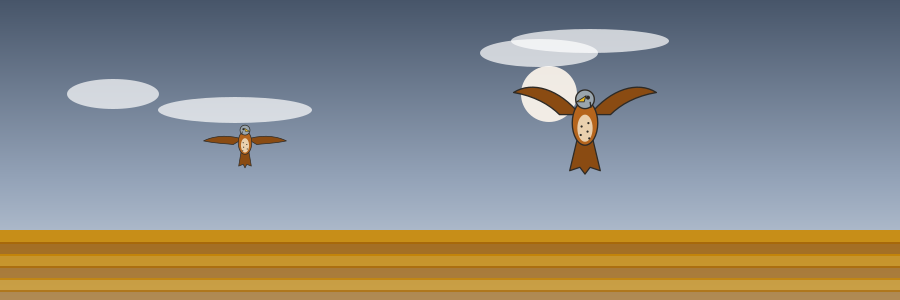
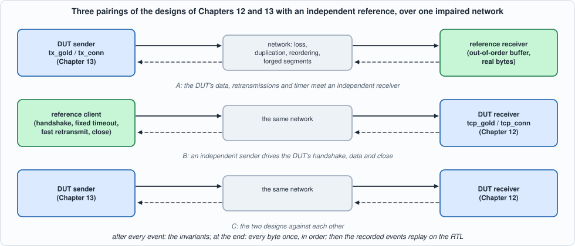
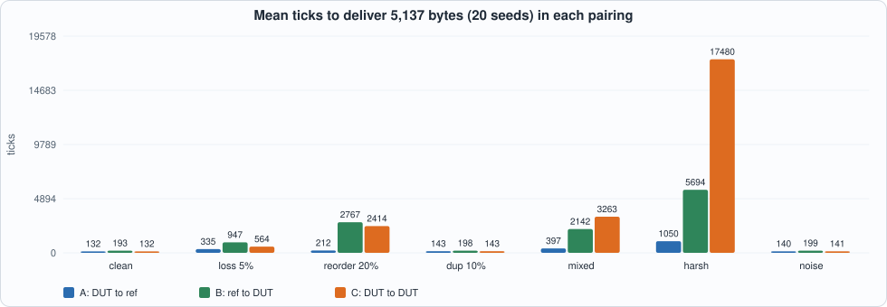
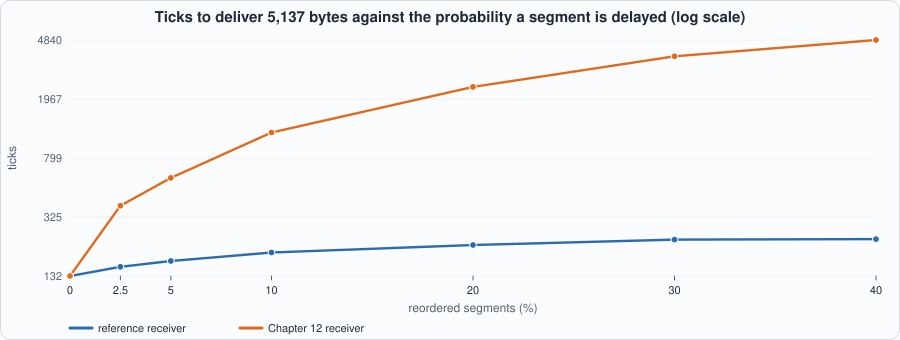
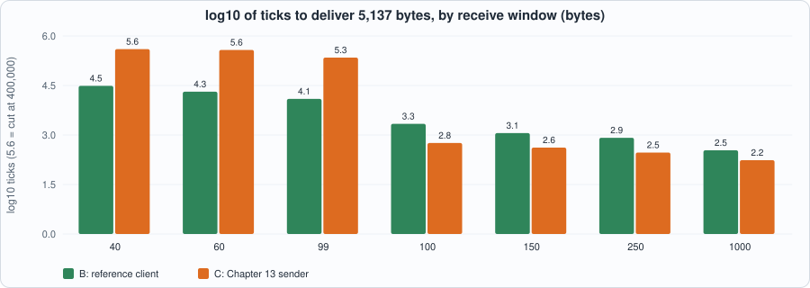
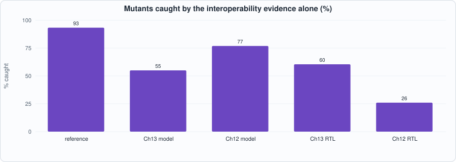

14. Testing the Stack Against an Independent Reference: Loss, Reordering, Duplication, Forged Segments, and the Bug It Found¶

About the kestrels in this picture
- Common kestrel (Falco tinnunculus) ranges across Europe, Asia and Africa. It is famous for hovering: it faces the wind and holds its head almost still while its body adjusts, searching the ground below before it drops onto prey. A much-cited study reported that voles' scent trails reflect ultraviolet light, which kestrels may be able to see.
- Nankeen kestrel (Falco cenchroides) is found across Australia and nearby islands. It hovers over open country and grassland, and often hunts along roadsides and fields.
The scene is imaginary and the birds are stylised drawings.
What you will see: the receive side of Chapter 12 and the send side of Chapter 13 meet a TCP written separately and a network that misbehaves. The reference is a small, deliberately different implementation (a receiver that keeps early segments and holds real bytes, a client that does the handshake, uses a fixed timeout and fast retransmit, and closes); the network loses, duplicates and delays segments and injects forged ones. Three pairings are run under seven impairment profiles, every byte is checked and every invariant is checked after every event, and the events the designs saw are then replayed on the RTL. The run found a real bug in Chapter 13's sender, which is fixed in this chapter (Chapter 13's page, model, RTL, tests and mutation run are corrected), and it measured three limits of the designs that the unit tests could not show.
What you need to know first: Chapters 12 and 13 (the two designs under test) and Chapter 6 (mutation testing).
What this chapter builds: model/ref_stack.py (the reference and the channel), model/interop.py (the three pairings, the invariants and the one-function battery), tools/ch14_run.py, tools/ch14_example_a.py, tools/ch14_example_b.py, tools/mut_ch14.py, tools/make_figs_ch14.py. It changes rtl/tx.sv, model/tx_gold.py (the timeout retransmission, and added hand-checked scenarios), model/tcp_gold.py and tools/ch13_run.py, tools/mut_ch13.py (added scenarios and a mutant).
Scope: what this chapter leaves out, on purpose
No formal proof. The safety invariants are checked at run time, after every event of every run (1.87 million checks in section 2); they are not proved for all states (Exercise 4). The designs under test are the Python models and the RTL replayed against them, not the RTL in the closed loop: Chapters 12 and 13 showed that the RTL equals the model after every event of every trace, and section 4 shows it again on the traces made here; a closed loop with the RTL in it would add a co-simulation harness and no new information while that holds. One data direction, one connection, no options, and the DUT has no timer for control segments (section 3 measures what that costs). The impairments are a model of a network, not a measurement of one.
The reference, and why it is written the other way round¶
A test is only as independent as its oracle. If the test used tx_gold.py to check tx_gold.py it could only find places where the RTL disagrees with its own model (Chapters 12 and 13 did that). model/ref_stack.py shares no code with the models and differs in design on purpose, so that where the two agree it is about what the user sees (the bytes arrive once, in order) and not about how:
| Design under test | Reference | |
|---|---|---|
| receiver, data | accepts only the segment at RCV.NXT, drops the rest (Chapter 12 states this on its first lines) |
keeps early segments in a map, delivers them when the hole fills, holds the real bytes |
| sender, timeout | RFC 6298 estimator in fixed point, Karn's rule, backoff | a fixed timeout that doubles up to a maximum; no estimator |
| sender, recovery | go-back-N after a timeout | go-back-N after a timeout and fast retransmit after three duplicate ACKs |
| connection | handshake and close in the state machine; no timer for SYN-ACK or FIN | a client that retransmits its SYN and FIN and closes |
The payload of the byte at stream offset i is stream_byte(i), a fixed function, so a segment's content is known from its sequence number and nothing has to be stored to check what arrived.
#!/usr/bin/env python3
"""Chapter 14: an INDEPENDENT reference for the TCP of Chapters 12 and 13, and the impaired network between them. Nothing here imports tx_gold.py or tcp_gold.py, and it is written the other way round on purpose: a receiver that keeps out-of-order segments and holds real bytes, a sender that keeps real bytes, uses a fixed timeout with doubling (no estimator), retransmits everything after a timeout and the oldest segment after three duplicate ACKs (fast retransmit). Where the design under test (DUT) and the reference differ in design they must still agree on what the user sees: the bytes arrive, once, in order.
A segment is a tuple (flags, seq, ack, ln, wnd); flags SYN=1 ACK=2 FIN=4 RST=8 (the same values as RFC 9293 order in Chapter 12, written again here). The payload of the byte at stream offset i is stream_byte(i), so nothing needs to be stored to know what a segment carries.
The network: Channel is one direction. It loses a segment with probability `loss`, duplicates it with probability `dup`, adds `jitter` ticks of random delay (0 in the profiles: a plain wire keeps its order) and, with probability `reorder`, up to `spread` more ticks (so the segment is overtaken by later ones). Every random choice comes from one seeded generator: a run is reproducible."""
import heapq, random
M = 0xFFFFFFFF
SYN, ACK, FIN, RST = 1, 2, 4, 8
def lt(a, b): return ((a - b) & M) >> 31 == 1
def le(a, b): return a == b or lt(a, b)
def stream_byte(i): return (i * 131 + (i >> 8) * 17 + 7) & 255
def stream(off, n): return bytes(stream_byte(off + i) for i in range(n))
class Channel:
def __init__(self, rng, delay=20, jitter=0, loss=0.0, dup=0.0, reorder=0.0, spread=60):
self.rng, self.delay, self.jitter, self.loss, self.dup, self.reorder, self.spread = rng, delay, jitter, loss, dup, reorder, spread
self.q = []; self.n = 0; self.sent = self.orig = 0; self.last = -1; self.overtaken = 0
def send(self, t, seg):
self.sent += 1
if self.rng.random() < self.loss: return
copies = 1
if self.rng.random() < self.dup: copies = 2
self.orig += 1
for _ in range(copies):
d = self.delay + self.rng.randint(0, self.jitter)
if self.rng.random() < self.reorder: d += self.rng.randint(1, self.spread)
heapq.heappush(self.q, (t + max(1, d), self.n, seg)); self.n += 1
def due(self, t):
out = []
while self.q and self.q[0][0] <= t:
_, n, seg = heapq.heappop(self.q); out.append(seg)
if n < self.last: self.overtaken += 1
self.last = max(self.last, n)
return out
@property
def lost(self): return self.sent - self.orig # what the profile asked for is counted by what the receiver could observe,
@property
def duped(self): return self.n - self.orig # not by what the channel meant to do: copies that were queued,
@property
def late(self): return self.overtaken # and segments that arrived after one sent later
def empty(self): return not self.q
class RefReceiver:
"""An established connection's receiving end: reassembles out-of-order segments, acknowledges cumulatively (a duplicate ACK for anything out of order), holds the bytes."""
def __init__(self, first, wnd=65535):
self.nxt = first & M; self.first = first & M; self.wnd = wnd; self.ooo = {}; self.buf = bytearray()
def on_seg(self, t, sg, out):
f, seq, ack, ln, wnd = sg
if ln > 0:
if lt(self.nxt, (seq + ln) & M): # carries something we still need
self.ooo[seq] = max(self.ooo.get(seq, 0), ln)
progressed = True
while progressed:
progressed = False
for sq in sorted(self.ooo, key=lambda x: (x - self.nxt) & M):
l = self.ooo[sq]
if le(sq, self.nxt):
end = (sq + l) & M
if lt(self.nxt, end):
n = (end - self.nxt) & M; self.buf += stream((self.nxt - self.first) & M, n); self.nxt = end
del self.ooo[sq]; progressed = True; break
out.append((ACK, 0, self.nxt, 0, self.wnd))
class RefClient:
"""Active opener and sender: SYN (retransmitted), data, FIN, waits for the peer's FIN. Fixed timeout `rto` doubled up to `rto_max` on each expiry, reset by an ACK that advances."""
def __init__(self, iss, total, mss=100, wnd=4096, rto=200, rto_max=3200, fast=True):
self.iss = iss & M; self.total = total; self.mss = mss; self.win = wnd; self.rto0 = rto; self.rto_max = rto_max; self.fast = fast
self.state = "CLOSED"; self.una = self.nxt = self.iss; self.rcv = 0; self.timer = None; self.rto = rto; self.dup = 0; self.retx = 0; self.segs = 0; self.peer_wnd = wnd
@property
def dstart(self): return (self.iss + 1) & M
@property
def dend(self): return (self.iss + 1 + self.total) & M
def start(self, t, out):
self.state = "SYN_SENT"; self.nxt = (self.iss + 1) & M; out.append((SYN, self.iss, 0, 0, self.win)); self.timer = t + self.rto
def _data(self, t, out):
while self.state == "EST" and lt(self.nxt, self.dend) and ((self.nxt - self.una) & M) < min(self.win, self.peer_wnd):
n = min(self.mss, (self.dend - self.nxt) & M); out.append((ACK, self.nxt, self.rcv, n, self.win)); self.segs += 1
if lt(self.nxt, self.high): self.retx += 1
self.nxt = (self.nxt + n) & M
if lt(self.high, self.nxt): self.high = self.nxt
if self.timer is None: self.timer = t + self.rto
if self.state == "EST" and self.nxt == self.dend and self.una == self.dend:
out.append((FIN | ACK, self.dend, self.rcv, 0, self.win)); self.nxt = (self.dend + 1) & M; self.state = "FIN_WAIT_1"; self.timer = t + self.rto
def on_seg(self, t, sg, out):
f, seq, ack, ln, wnd = sg
if self.state == "SYN_SENT":
if f & SYN and f & ACK and ack == (self.iss + 1) & M:
self.rcv = (seq + 1) & M; self.una = ack; self.state = "EST"; self.high = self.nxt; self.timer = None; self.rto = self.rto0; self.peer_wnd = wnd
out.append((ACK, self.nxt, self.rcv, 0, self.win)); self._data(t, out)
return
if self.state in ("EST", "FIN_WAIT_1", "FIN_WAIT_2"):
if f & ACK:
self.peer_wnd = wnd
if lt(self.una, ack) and le(ack, self.nxt):
self.una = ack; self.dup = 0; self.rto = self.rto0; self.timer = t + self.rto if self.una != self.nxt else None
if self.state == "FIN_WAIT_1" and self.una == self.nxt: self.state = "FIN_WAIT_2"; self.timer = None
elif ack == self.una and self.una != self.nxt and ln == 0 and not f & FIN:
self.dup += 1
if self.fast and self.dup == 3 and self.state == "EST":
n = min(self.mss, (self.dend - self.una) & M); out.append((ACK, self.una, self.rcv, n, self.win)); self.retx += 1; self.segs += 1
if f & FIN and seq == self.rcv:
self.rcv = (self.rcv + 1) & M; out.append((ACK, self.nxt, self.rcv, 0, self.win))
if self.state == "FIN_WAIT_2" or (self.state == "FIN_WAIT_1" and self.una == self.nxt): self.state = "DONE"; self.timer = None
elif f & FIN: out.append((ACK, self.nxt, self.rcv, 0, self.win))
self._data(t, out)
elif self.state == "DONE" and f & FIN: out.append((ACK, self.nxt, self.rcv, 0, self.win))
def tick(self, t, out):
if self.timer is not None and t >= self.timer:
self.rto = min(self.rto * 2, self.rto_max)
if self.state == "SYN_SENT": out.append((SYN, self.iss, 0, 0, self.win))
elif self.state == "EST": self.nxt = self.una; self.dup = 0; self._data(t, out)
elif self.state == "FIN_WAIT_1":
if lt(self.una, self.dend): self.nxt = self.una; self.state = "EST"; self._data(t, out)
else: out.append((FIN | ACK, self.dend, self.rcv, 0, self.win))
self.timer = t + self.rto if self.state != "DONE" else None
def done(self): return self.state == "DONE"
if __name__ == "__main__":
rng = random.Random(1); r = RefReceiver(1000); o = []
r.on_seg(0, (ACK, 1100, 0, 100, 0), o); assert r.nxt == 1000 and o[-1][2] == 1000 # out of order: duplicate ACK
r.on_seg(0, (ACK, 1000, 0, 100, 0), o); assert r.nxt == 1200 and bytes(r.buf) == stream(0, 200) # the hole fills: both segments delivered
r.on_seg(0, (ACK, 1000, 0, 100, 0), o); assert r.nxt == 1200 and len(r.buf) == 200 # a duplicate adds nothing
c = Channel(rng, loss=0.5); [c.send(0, (0, i, 0, 0, 0)) for i in range(1000)]; assert 400 < c.lost < 600
c = Channel(rng, dup=0.5, reorder=0.5); [c.send(0, (0, i, 0, 0, 0)) for i in range(1000)]; c.due(10**6); assert 400 < c.duped < 600 and c.late > 100
# ---- added in Chapter 14: a segment that overlaps data already delivered adds only its new bytes
r = RefReceiver(1000); o = []; r.on_seg(0, (ACK, 1000, 0, 100, 0), o); r.on_seg(0, (ACK, 1050, 0, 100, 0), o); assert r.nxt == 1150 and bytes(r.buf) == stream(0, 150)
# ---- end of the Chapter 14 additions
print("ref_stack hand-checked scenarios passed")
The Channel is one direction of the network. A segment is lost with probability loss, duplicated with probability dup, and with probability reorder delayed by 1 to 60 ticks so that later segments overtake it. The counters of what the channel did are observed at the receiving end (copies actually queued, segments that actually arrived after a later one), not counted where the decision is made: a channel that silently stopped reordering would otherwise still report that it had.

Figure 14.1: the DUT sender against the reference receiver (A), the reference client against the DUT receiver (B), and the two designs against each other (C).The pairings, the profiles and the invariants¶
model/interop.py runs one tick at a time and gives the DUT one event per tick, as the hardware takes one: an arriving segment, or the application's POLL or TICK. Seven profiles:
| profile | what the network does |
|---|---|
| clean | nothing: a wire of 20 ticks |
| loss 5% | each segment lost with probability 0.05 (both directions) |
| reorder 20% | one segment in five delayed by 1 to 60 ticks |
| duplicate 10% | one segment in ten delivered twice |
| mixed | loss 5%, reorder 10%, duplicate 5% |
| harsh | loss 15%, reorder 30%, duplicate 15% |
| off-path noise | a forged segment injected with probability 0.1 per tick: for the sender an ACK outside (SND.UNA, SND.MAX]; for the receiver an ACK, an ACK with data, a SYN, a SYN-ACK or an inexact RST at offsets inside and outside the window (never an exact RST, never data at RCV.NXT, which would be indistinguishable from the real thing) |
and an eighth, used only by Example B, that gives the receiver a window below one segment. Pairing B runs the DUT's handshake as passive opener (LISTEN, SYN_RCVD, ESTABLISHED), the data, the peer's FIN (CLOSE_WAIT), the application's close (LAST_ACK) and CLOSED. Pairing C starts its receiver in ESTABLISHED after a lossless handshake.
What is checked. After every sender event (Monitor.sender): SND.UNA <= SND.NXT <= SND.MAX <= end; SND.UNA never moves backwards; a segment has a length in 1..MSS, starts at SND.NXT (or at SND.UNA after a timeout) and ends within the data written; its retransmission flag is set exactly when it starts below the old SND.MAX; new data stays inside the window; an ACK beyond SND.MAX is never accepted; the retransmission timer runs exactly while data is outstanding. After every receiver event (Monitor.receiver): data is delivered only from a segment at RCV.NXT, never more than the segment carries, never more than the window offered, and never more than was sent. After every forged segment: the state of the sender or receiver is unchanged. At the end: the user has every byte, once, in order, and both ends are where they should be.
#!/usr/bin/env python3
"""Chapter 14: the design under test (DUT: tx_gold.Sender of Chapter 13, tcp_gold.TCB of Chapter 12) against the independent reference (ref_stack.py) over an impaired network. Three pairings, one tick per step, ONE event per tick for the DUT (as the hardware takes one):
A DUT sender -> reference receiver (both ends established; the DUT's data, retransmissions and timer meet an independent receiver)
B reference client -> DUT receiver (the DUT's TCB does the handshake as passive opener, receives, closes: SYN_RCVD, ESTABLISHED, CLOSE_WAIT, LAST_ACK, CLOSED)
C DUT sender -> DUT receiver (the two designs of Chapters 12 and 13 against each other; the receiver is in ESTABLISHED, set up by a lossless handshake)
The DUT has no timer for CONTROL segments (SYN-ACK, FIN): `ctl_rto` > 0 switches on a shim in the harness that re-sends the DUT's last control segment after that many silent ticks; with ctl_rto = 0 the handshake can stall, and the harness reports it. Every run checks, after EVERY event, the invariants listed in `Monitor` and, at the end, that the byte stream the user receives is exactly the byte stream sent."""
import os, random, sys
sys.path.insert(0, os.path.dirname(os.path.abspath(__file__)))
import ref_stack as R, tx_gold as TX, tcp_gold as TC
M = 0xFFFFFFFF
PROFILES = {"clean": dict(), "loss 5%": dict(loss=0.05), "reorder 20%": dict(reorder=0.2), "duplicate 10%": dict(dup=0.1), "loss 5, reorder 10, dup 5": dict(loss=0.05, reorder=0.1, dup=0.05), "harsh: loss 15, reorder 30, dup 15": dict(loss=0.15, reorder=0.3, dup=0.15), "off-path noise 10%": dict(noise=0.1), "receive window 60 B, loss 5%": dict(win=60, loss=0.05)}
W = 4096
class Violation(Exception): pass
class Monitor:
"""Invariants of the sender after every event, and of the receiver. Raises Violation with the event number."""
def __init__(self): self.n = 0; self.checks = 0; self.una = None; self.rcv = None
def sender(self, s, e, a, tx, old):
self.n += 1; una, nxt, mx, wnd, end = s.una, s.nxt, s.max, s.wnd, s.end
def chk(c, msg):
self.checks += 1
if not c: raise Violation(f"event {self.n}: {msg}")
chk(R.le(una, nxt) and R.le(nxt, mx) and R.le(mx, end), "SND.UNA <= SND.NXT <= SND.MAX <= end")
if self.una is not None: chk(R.le(self.una, una), "SND.UNA never moves backwards")
self.una = una
if tx:
sq, ln, rx = tx; chk(0 < ln <= s.mss, "segment length in 1..MSS"); chk(sq == old[1] or (e == TX.TICK and sq == old[0]), "a segment starts at SND.NXT (or at SND.UNA after a timeout)")
chk(R.le((sq + ln) & M, end), "no byte beyond the application's data"); chk(bool(rx) == R.lt(sq, old[2]), "retransmission flag = start below the old SND.MAX")
if e == TX.POLL and tx: chk(R.le((tx[0] + tx[1]) & M, (una + wnd) & M), "new data stays inside the peer's window")
if e == TX.ACK: chk(not (R.lt(old[2], a) and una == a), "an ACK beyond SND.MAX is never accepted")
chk(bool(s.timer_on) == (una != mx), "the retransmission timer runs exactly while data is outstanding")
def receiver(self, t, ev_seq, ev_ln, dlv, rcv_before, iss_data, total, wnd):
self.checks += 1
if dlv:
if ev_seq != rcv_before: raise Violation("data delivered from a segment that is not at RCV.NXT")
if dlv > ev_ln: raise Violation("delivered more bytes than the segment carries")
if dlv > wnd: raise Violation("delivered more bytes than the window offered")
if (t.rcv - iss_data) & M > total: raise Violation("delivered more than was sent")
def forge_ack(rng, s):
"""An off-path ACK for the sender: never inside (SND.UNA, SND.MAX] (that one is indistinguishable from a real one) and never equal to SND.UNA (it would be taken as a window update): beyond SND.MAX, or before SND.UNA, with a random window."""
k = rng.randrange(4)
a = (s.max + rng.randint(1, 5000)) & M if k == 0 else (s.una - rng.randint(1, 3000)) & M if k == 1 else (s.max + (1 << 31)) & M if k == 2 else rng.getrandbits(32)
if R.lt(s.una, a) and not R.lt(s.max, a) or a == s.una: a = (s.max + 1) & M
return a, rng.getrandbits(16)
def forge_seg(rng, t, W=W):
"""An off-path segment for the receiver. ESTABLISHED: flags ACK, ACK + data, RST, SYN, SYN|ACK, at offsets from RCV.NXT inside the window, outside it, and far away, never an exact RST and never data at RCV.NXT. Other states: an ACK whose number is outside (SND.UNA, SND.NXT]."""
if t.state == TC.ESTAB:
f, ln = rng.choice([(TC.ACK, 0), (TC.ACK, 60), (TC.RST, 0), (TC.SYN, 0), (TC.SYN | TC.ACK, 0), (TC.ACK, 0)])
off = rng.choice([-1, -100, 1, 7, W - 1, W, W + 50, rng.getrandbits(32), 0x80000000])
if off == 0 and (f & TC.RST or ln): off = 1
ack = rng.choice([t.nxt, (t.nxt + 1) & M, (t.nxt - 1) & M, rng.getrandbits(32)]) & M
return f, (t.rcv + off) & M, ack, ln
ack = (t.nxt + rng.randint(1, 5000)) & M if rng.random() < .5 else (t.una - rng.randint(1, 3000)) & M
return TC.ACK, (t.rcv + rng.choice([0, 3, -5, 100])) & M, ack, 0
def run_a(seed, total, prof, mss=100, rto=None, wnd=65535, params=None, isn=1000, awnd=2048):
"""DUT sender -> reference receiver."""
prof = dict(prof); noise = prof.pop("noise", 0); rng = random.Random(seed ^ 0x5a5a); fwd = R.Channel(random.Random(seed * 2 + 1), **prof); bwd = R.Channel(random.Random(seed * 2 + 2), **prof)
s = TX.Sender(isn=isn, mss=mss, wnd=wnd, **(params or {})); first = s.una; rcv = R.RefReceiver(first, awnd); mon = Monitor(); events = []; inbox = []; t = 0; tx_bytes = 0; nretx = 0; nseg = 0; nf = 0
def ev(e, a=0, w=0):
nonlocal tx_bytes, nretx, nseg
old = (s.una, s.nxt, s.max); r = s.event(e, t, a, w); events.append((t, e, a, w)); mon.sender(s, e, a, r, old)
if r: sq, ln, rx = r; fwd.send(t, (R.ACK, sq, 0, ln, 0)); nseg += 1; nretx += 1 if rx else 0; tx_bytes += ln
ev(TX.WRITE, total)
while t < 400000:
t += 1
out = []
for sg in fwd.due(t): rcv.on_seg(t, sg, out)
for sg in out: bwd.send(t, sg)
inbox += bwd.due(t)
if noise and rng.random() < noise and s.una != s.end: a, w = forge_ack(rng, s); inbox.append((R.ACK, 0, a, 0, w, True))
if inbox: forged = inbox[0][5:] != (); f, sq, ack, ln, w, *_ = inbox.pop(0); u0, w0 = s.una, s.wnd; ev(TX.ACK, ack, w); forged and check_forged(s, u0, w0); nf += 1 if forged else 0
else:
avail = (s.end - s.nxt) & M; wl = (s.una + s.wnd - s.nxt) & M
ev(TX.POLL) if avail > 0 and not (wl >> 31) and wl > 0 else ev(TX.TICK)
if s.una == s.end and not inbox and bwd.empty() and fwd.empty(): break
ok = bytes(rcv.buf) == R.stream(0, total) and s.una == s.end
return dict(ok=ok, ticks=t, segs=nseg, retx=nretx, wire=tx_bytes, events=events, checks=mon.checks, delivered=len(rcv.buf), lost=fwd.lost + bwd.lost, duped=fwd.duped + bwd.duped, late=fwd.late + bwd.late, sender=s, forged=nf)
def check_forged(s, u0, w0):
if s.una != u0 or s.wnd != w0: raise Violation("a forged ACK changed the sender's state")
def tcb_listen(iss_b=5000):
t = TC.TCB(); t.event(TC.E_OPEN_P, iss=iss_b); return t
def run_b(seed, total, prof, mss=100, ctl_rto=300, fast=True, dut=None, iss=None):
"""Reference client -> DUT receiver (the DUT does the handshake and the close). Returns a dict; `stall` if the run does not finish."""
prof = dict(prof); noise = prof.pop("noise", 0); Wr = prof.pop("win", W); rng = random.Random(seed ^ 0x3c3c); fwd = R.Channel(random.Random(seed * 2 + 1), **prof); bwd = R.Channel(random.Random(seed * 2 + 2), **prof)
iss_a = random.Random(seed).getrandbits(32) if iss is None else iss; c = R.RefClient(iss_a, total, mss=mss, wnd=Wr, rto=200, fast=fast); t_ = dut or tcb_listen(); mon = Monitor(); evlog = [] if dut else [dict(e=TC.E_OPEN_P, cid=0, iss=5000)]; inbox = []; t = 0; out = []; got = 0; last_ctl = None; last_ctl_t = 0; closed_sent = False; nf = [0]; dstart = (iss_a + 1) & M
c.start(0, out)
for sg in out: fwd.send(0, sg)
def deliver(e, forged=False, **k):
nonlocal got, last_ctl, last_ctl_t
before = t_.rcv; sq = k.get("seq", 0); ln = k.get("ln", 0); k.setdefault("wnd", Wr); st0 = t_.snapshot(); tx, d = t_.event(e, **k); evlog.append(dict(e=e, cid=0, **k))
if forged:
if t_.snapshot() != st0 or d: raise Violation("a forged segment changed the receiver's state or delivered data")
nf[0] += 1; return
if e == TC.E_SEG: mon.receiver(t_, sq, ln, d, before, (dstart) & M, total, k["wnd"])
got += d
if tx:
bwd.send(t, (tx[0], tx[1], tx[2], 0, Wr))
if tx[0] & (TC.SYN | TC.FIN): last_ctl = (tx[0], tx[1], tx[2], 0, Wr); last_ctl_t = t
while t < 400000:
t += 1
out = []
for sg in fwd.due(t): inbox.append(sg)
if noise and rng.random() < noise and t_.state in (TC.ESTAB, TC.SYN_RCVD, TC.LAST_ACK, TC.CLOSE_WAIT): f, sq, ack, ln = forge_seg(rng, t_, Wr); inbox.append((f, sq, ack, ln, Wr, True))
if inbox:
f, sq, ack, ln, w, *fg = inbox.pop(0); deliver(TC.E_SEG, forged=bool(fg), f=f, seq=sq, ack=ack, ln=ln)
elif t_.state == TC.CLOSE_WAIT and not closed_sent: closed_sent = True; deliver(TC.E_CLOSE)
elif ctl_rto and last_ctl and t_.state in (TC.SYN_RCVD, TC.LAST_ACK) and t - last_ctl_t >= ctl_rto: bwd.send(t, last_ctl); last_ctl_t = t; evlog.append(dict(e="shim", t=t))
for sg in bwd.due(t): c.on_seg(t, sg, out)
c.tick(t, out)
for sg in out: fwd.send(t, sg)
if c.done() and t_.state == TC.CLOSED and not inbox: break
ok = c.done() and t_.state == TC.CLOSED and got == total and (t_.rcv - dstart) & M == total + 1
return dict(ok=ok, stall=not ok, ticks=t, segs=c.segs, retx=c.retx, got=got, state=TC.SNAME[t_.state], shim=sum(1 for x in evlog if x["e"] == "shim"), evlog=[x for x in evlog if x["e"] != "shim"], checks=mon.checks, lost=fwd.lost + bwd.lost, duped=fwd.duped + bwd.duped, late=fwd.late + bwd.late, forged=nf[0])
def run_c(seed, total, prof, mss=100, params=None, isn=1000):
"""DUT sender -> DUT receiver (ESTABLISHED by a lossless handshake)."""
prof = dict(prof); noise = prof.pop("noise", 0); Wr = prof.pop("win", W); rng = random.Random(seed ^ 0x2d2d); fwd = R.Channel(random.Random(seed * 2 + 1), **prof); bwd = R.Channel(random.Random(seed * 2 + 2), **prof)
s = TX.Sender(isn=isn, mss=mss, **(params or {})); first = s.una; tb = tcb_listen()
tb.event(TC.E_SEG, f=TC.SYN, seq=(first - 1) & M, ack=0, ln=0, wnd=Wr); tb.event(TC.E_SEG, f=TC.ACK, seq=first, ack=(5000 + 1) & M, ln=0, wnd=Wr); assert tb.state == TC.ESTAB and tb.rcv == first
evlog = [dict(e=TC.E_OPEN_P, cid=0, iss=5000), dict(e=TC.E_SEG, cid=0, f=TC.SYN, seq=(first - 1) & M, ack=0, ln=0, wnd=Wr), dict(e=TC.E_SEG, cid=0, f=TC.ACK, seq=first, ack=5001, ln=0, wnd=Wr)]
mon = Monitor(); mon2 = Monitor(); events = []; inbox = []; rin = []; t = 0; got = 0; nseg = 0; nretx = 0; nf = 0
def ev(e, a=0, w=0):
nonlocal nseg, nretx
old = (s.una, s.nxt, s.max); r = s.event(e, t, a, w); events.append((t, e, a, w)); mon.sender(s, e, a, r, old)
if r: sq, ln, rx = r; fwd.send(t, (R.ACK, sq, 5001, ln, 0)); nseg += 1; nretx += 1 if rx else 0
ev(TX.WRITE, total)
while t < 400000:
t += 1
rin += fwd.due(t)
if noise and rng.random() < noise: f, sq, ack, ln = forge_seg(rng, tb, Wr); rin.append((f, sq, ack, ln, Wr, True))
if rin:
f, sq, ack, ln, w, *fg = rin.pop(0); before = tb.rcv; st0 = tb.snapshot(); tx, d = tb.event(TC.E_SEG, f, sq, ack, ln, Wr); evlog.append(dict(e=TC.E_SEG, cid=0, f=f, seq=sq, ack=ack, ln=ln, wnd=Wr)); mon2.receiver(tb, sq, ln, d, before, first, total, Wr); got += d
if fg:
nf += 1
if tb.snapshot() != st0 or d: raise Violation("a forged segment changed the receiver's state or delivered data")
elif tx: bwd.send(t, (tx[0], tx[1], tx[2], 0, Wr))
inbox += bwd.due(t)
if noise and rng.random() < noise and s.una != s.end: a_, w_ = forge_ack(rng, s); inbox.append((R.ACK, 0, a_, 0, w_, True))
if inbox: forged = inbox[0][5:] != (); f, sq, ack, ln, w, *_ = inbox.pop(0); u0, w0 = s.una, s.wnd; ev(TX.ACK, ack, w); forged and check_forged(s, u0, w0); nf += 1 if forged else 0
else:
avail = (s.end - s.nxt) & M; wl = (s.una + s.wnd - s.nxt) & M
ev(TX.POLL) if avail > 0 and not (wl >> 31) and wl > 0 else ev(TX.TICK)
if s.una == s.end and not inbox and not rin and bwd.empty() and fwd.empty(): break
ok = got == total and s.una == s.end and tb.rcv == (first + total) & M
return dict(ok=ok, ticks=t, segs=nseg, retx=nretx, got=got, events=events, evlog=evlog, checks=mon.checks + mon2.checks, lost=fwd.lost + bwd.lost, duped=fwd.duped + bwd.duped, late=fwd.late + bwd.late, forged=nf)
BATTERY = ("clean", "loss 5%", "reorder 20%", "duplicate 10%", "harsh: loss 15, reorder 30, dup 15", "off-path noise 10%", "receive window 60 B, loss 5%")
BUDGET = {('A', 'clean'): 198, ('B', 'clean'): 289, ('C', 'clean'): 198, ('A', 'loss 5%'): 942, ('B', 'loss 5%'): 1492, ('C', 'loss 5%'): 1693, ('A', 'reorder 20%'): 333, ('B', 'reorder 20%'): 6334, ('C', 'reorder 20%'): 3513, ('A', 'duplicate 10%'): 219, ('B', 'duplicate 10%'): 300, ('C', 'duplicate 10%'): 219, ('A', 'harsh: loss 15, reorder 30, dup 15'): 2155, ('B', 'harsh: loss 15, reorder 30, dup 15'): 8092, ('C', 'harsh: loss 15, reorder 30, dup 15'): 187111, ('A', 'off-path noise 10%'): 213, ('B', 'off-path noise 10%'): 301, ('C', 'off-path noise 10%'): 214, ('B', 'receive window 60 B, loss 5%'): 40263} # (pairing, profile) -> the most ticks any of the battery's runs may take: 1.5 x the slowest run of the unmutated design
def battery(measure=False):
"""The Chapter 14 test as one function: -> None if the design under test and the reference agree everywhere, else a string naming the first check that failed. Checks: every run finishes with every byte once and in order; no invariant is violated; the profile really did lose / duplicate / delay segments; no run takes more than 1.5 x the ticks of the unmutated design (a transfer that completes but crawls is a failure of a different kind)."""
worst = {}
for nm in BATTERY:
for lab, fn in (("A", run_a), ("B", run_b), ("C", run_c)):
if lab == "C" and PROFILES[nm].get("win", W) < 100: continue # a long transfer over a window below one segment crawls: a measured weakness (Chapter 14, Example B), not a pass/fail test
if lab == "A" and "win" in PROFILES[nm]: continue # (pairing A has no receive-window parameter)
for sd in range(3):
try: r = fn(sd, 5137, PROFILES[nm])
except Violation as v: return f"invariant, {lab}, {nm}: {v}"
except Exception as x: return f"crash, {lab}, {nm}: {type(x).__name__}"
if not r["ok"]: return f"bytes or completion, {lab}, {nm}"
pr = PROFILES[nm]
if (pr.get("loss") and r["lost"] == 0 and sd == 0) or (pr.get("dup") and r["duped"] == 0 and sd == 0) or (pr.get("reorder") and r["late"] == 0 and sd == 0) or (pr.get("noise") and r["forged"] == 0 and sd == 0): return f"the profile '{nm}' impaired nothing"
worst[(lab, nm)] = max(worst.get((lab, nm), 0), r["ticks"])
if measure: return worst
for k, v in worst.items():
if k in BUDGET and v > BUDGET[k]: return f"time budget, {k[0]}, {k[1]}: {v} > {BUDGET[k]} ticks"
return None
if __name__ == "__main__":
for nm, pr in PROFILES.items():
a = run_a(1, 5000, pr); b = run_b(1, 5000, pr); c = run_c(1, 5000, pr); print(f"{nm:36s} A {a['ok']} {a['ticks']:6d} B {b['ok']} {b['ticks']:6d} {b['state']} shim={b['shim']} C {c['ok']} {c['ticks']:6d}")
The tests¶
#!/usr/bin/env python3
"""Chapter 14: the designs of Chapters 12 and 13 against an independent reference over an impaired network. (1) the reference alone; (2) the three pairings under six impairment profiles: bytes, order, invariants; (3) the missing control-segment timer; (4) the traces of those runs replayed on the RTL (tx_conn for the send side, tcp_conn and the table for the receive side), in two simulators."""
import os, statistics as st, sys
sys.path.insert(0, os.path.dirname(os.path.abspath(__file__))); sys.path.insert(0, os.path.join(os.path.dirname(os.path.abspath(__file__)), "..", "model"))
import flow, interop as I, tx_gold as TX, tcp_gold as TC, ref_stack as RS, ch12_run as c12, ch13_run as c13
R = flow.ROOT; TOTAL = 5137; SEEDS = 20
PROF = {k: v for k, v in I.PROFILES.items() if "win" not in v} # the small-window profile belongs to Example B
def pairings(total=TOTAL, seeds=SEEDS):
out = {}
for nm, pr in PROF.items():
out[nm] = [[fn(sd, total, pr) for sd in range(seeds)] for fn in (I.run_a, I.run_b, I.run_c)]
return out
def sender_trace(r): return [(t, 0, e, a, w) for t, e, a, w in r["events"]]
if __name__ == "__main__":
print("== 1. the reference alone (hand-checked by python3 model/ref_stack.py): out-of-order segments held and delivered when the hole fills, a duplicate adds nothing, the channel loses the probability it is given")
import subprocess
print(" " + subprocess.run([sys.executable, "model/ref_stack.py"], cwd=R, capture_output=True, text=True).stdout.strip())
print(f"\n== 2. three pairings, seven impairment profiles, {SEEDS} seeds each, {TOTAL} bytes (MSS 100, one-way delay 20 ticks, receive window 4,096 for the DUT receiver). 'ok' = every byte arrived once, in order, and the invariants held at every event")
print(" A: DUT sender -> reference receiver B: reference client -> DUT receiver (handshake and close included) C: DUT sender -> DUT receiver")
print(f" {'profile':36s} | {'pairing':>7s} {'ok':>6s} {'mean ticks':>11s} {'max':>7s} {'mean retx segs':>15s} {'segments':>9s} {'invariant checks':>17s} {'lost':>6s} {'duplicated':>11s} {'delayed':>8s} {'forged':>7s}")
res = pairings()
for nm, trio in res.items():
for lab, rs in zip("ABC", trio):
print(f" {nm:36s} | {lab:>7s} {sum(r['ok'] for r in rs):3d}/{len(rs):<2d} {st.mean(r['ticks'] for r in rs):11.0f} {max(r['ticks'] for r in rs):7d} {st.mean(r['retx'] for r in rs):15.1f} {sum(r['segs'] for r in rs):9d} {sum(r['checks'] for r in rs):17d} {sum(r['lost'] for r in rs):6d} {sum(r['duped'] for r in rs):11d} {sum(r['late'] for r in rs):8d} {sum(r.get('forged', 0) for r in rs):7d}")
print(" (retx segs = segments the sender flagged as retransmissions, per transfer of 52 segments)")
print(" (delayed = segments that arrived after one sent later, counted at the receiving end; forged = off-path segments injected and answered without changing state)")
print("\n== 2b. the same with the sequence numbers about to wrap: the first data byte is 1,500 below 2^32, so the transfer crosses the wrap (profile: loss 5, reorder 10, dup 5; 20 seeds)")
pr = I.PROFILES["loss 5, reorder 10, dup 5"]; WR = (1 << 32) - 1500
for lab, fn, kw in (("A", I.run_a, dict(isn=WR)), ("B", I.run_b, dict(iss=WR - 1)), ("C", I.run_c, dict(isn=WR))):
rs = [fn(sd, TOTAL, pr, **kw) for sd in range(SEEDS)]; print(f" pairing {lab}: {sum(r['ok'] for r in rs)}/{len(rs)} ok, mean {st.mean(r['ticks'] for r in rs):.0f} ticks")
print("\n== 3. the DUT has no timer for CONTROL segments (SYN-ACK, FIN). Pairing B, 60 seeds per profile: runs that finish with and without a harness shim that re-sends the DUT's last control segment after 300 silent ticks")
print(f" {'profile':36s} | {'no shim: finished':>18s} {'stalled in':>26s} | {'shim 300: finished':>19s} {'shim re-sends':>14s}")
for nm, pr in PROF.items():
a = [I.run_b(sd, 2137, pr, ctl_rto=0) for sd in range(60)]; b = [I.run_b(sd, 2137, pr, ctl_rto=300) for sd in range(60)]; stalls = {}
for r in a:
if not r["ok"]: stalls[r["state"]] = stalls.get(r["state"], 0) + 1
print(f" {nm:36s} | {sum(r['ok'] for r in a):15d}/60 {', '.join(f'{k} {v}' for k, v in sorted(stalls.items())) or '-':>26s} | {sum(r['ok'] for r in b):16d}/60 {sum(r['shim'] for r in b):14d}")
print("\n== 4. the recorded traces on the RTL. Send side: the events the sender saw in A and C (acknowledgements duplicated, late, lost; every tick is an event) into tx_conn, compared after every event with the model. Receive side: the segments the TCB saw in B and C into tcp_conn and into a 4-connection table (tcp_tab2, 4 stages) with the four runs interleaved")
print(f" {'trace':36s} | {'runs':>5s} {'events':>7s} | {'Icarus':>10s} {'Verilator':>10s}")
for lab, fn in (("A", I.run_a), ("C", I.run_c)):
for nm in ("loss 5%", "reorder 20%", "harsh: loss 15, reorder 30, dup 15", "off-path noise 10%"):
ok = 0; ne = 0; v = "-"
for sd in range(3):
r = fn(sd + 40, 2137, I.PROFILES[nm]); ev = sender_trace(r); n = TX.write_stim(os.path.join(R, "out", "tx_stim.hex"), ev); got, _ = c13.sim(n, 0); exp = c13.conn_expected(ev, mss=100); ok += got == exp; ne += len(ev)
if sd == 0: gv, _ = c13.sim(n, 0, simu="verilator"); v = "PASS" if gv == exp else "FAIL"
print(f" tx_conn, {lab}, {nm:26s} | {3:5d} {ne:7d} | {ok:7d} of 3 {v:>10s}")
for lab, fn in (("B", I.run_b), ("C", I.run_c)):
for nm in ("loss 5%", "reorder 20%", "harsh: loss 15, reorder 30, dup 15", "off-path noise 10%"):
ok = 0; ne = 0; v = "-"
for sd in range(3):
r = fn(sd + 40, 2137, I.PROFILES[nm]); ev = r["evlog"]; exp = TC.expected_results(ev); got, _ = c12.run(ev, 0, seed=sd); ok += got == exp; ne += len(ev)
if sd == 0: gv, _ = c12.run(ev, 0, sim="verilator"); v = "PASS" if gv == exp else "FAIL"
print(f" tcp_conn, {lab}, {nm:25s} | {3:5d} {ne:7d} | {ok:7d} of 3 {v:>10s}")
ok = 0; ne = 0; v = "-"
for sd in range(3):
logs = [I.run_b(sd * 4 + k + 60, 2137, I.PROFILES["loss 5, reorder 10, dup 5"])["evlog"] for k in range(2)] + [I.run_c(sd * 4 + k + 70, 2137, I.PROFILES["loss 5, reorder 10, dup 5"])["evlog"] for k in range(2)]
evs = []; pos = [0] * 4
while any(pos[k] < len(logs[k]) for k in range(4)):
for k in range(4):
if pos[k] < len(logs[k]): evs.append(dict(logs[k][pos[k]], cid=k)); pos[k] += 1
exp = TC.expected_results(evs); got, _ = c12.run(evs, 2, 2, 1, seed=sd); ok += got == exp; ne += len(evs)
if sd == 0: gv, _ = c12.run(evs, 2, 2, 1, sim="verilator"); v = "PASS" if gv == exp else "FAIL"
print(f" tcp_tab2 4 stages, B,B,C,C interleaved | {3:5d} {ne:7d} | {ok:7d} of 3 {v:>10s}")
print("\n== 5. how much of the Chapter 12 receiver do the pairings reach? The distinct (state, event class, next state) triples seen in all B and C runs of section 2 and 2b, against those seen by Chapter 12's directed lives and 8 seeds of 3,000 random events over 8 connections")
inter = set()
for nm, trio in res.items():
for rs in trio[1:]:
for r in rs: inter |= {(a, c, d) for a, c, d, e, f in TC.transitions(r["evlog"])}
ch12 = set()
for seed in range(8): ch12 |= {(a, c, d) for a, c, d, e, f in TC.transitions(TC.directed_events(0) + TC.gen_events(seed, 3000, cids=8))}
print(f" pairings: {len(inter)} triples; Chapter 12 stimulus: {len(ch12)}; common: {len(inter & ch12)}; reached by the pairings and not by Chapter 12's stimulus: {len(inter - ch12)}")
st_i = sorted({a for a, c, d in inter}); st_c = sorted({a for a, c, d in ch12})
print(" states in which the pairings delivered an event: " + ", ".join(TC.SNAME[x] for x in st_i) + f" ({len(st_i)} of 11)")
print(" states Chapter 12's stimulus reached: " + f"{len(st_c)} of 11")
To run: python3 tools/ch14_run.py (several minutes). Recorded output:
== 1. the reference alone (hand-checked by python3 model/ref_stack.py): out-of-order segments held and delivered when the hole fills, a duplicate adds nothing, the channel loses the probability it is given
ref_stack hand-checked scenarios passed
== 2. three pairings, seven impairment profiles, 20 seeds each, 5137 bytes (MSS 100, one-way delay 20 ticks, receive window 4,096 for the DUT receiver). 'ok' = every byte arrived once, in order, and the invariants held at every event
A: DUT sender -> reference receiver B: reference client -> DUT receiver (handshake and close included) C: DUT sender -> DUT receiver
profile | pairing ok mean ticks max mean retx segs segments invariant checks lost duplicated delayed forged
clean | A 20/20 132 132 0.0 1040 14200 0 0 0 0
clean | B 20/20 193 193 0.0 1040 1120 0 0 0 0
clean | C 20/20 132 132 0.0 1040 15240 0 0 0 0
loss 5% | A 20/20 335 644 20.7 1454 28690 130 0 0 0
loss 5% | B 20/20 947 2195 57.9 2197 2169 212 0 0 0
loss 5% | C 20/20 564 1208 64.3 2326 49770 214 0 0 0
reorder 20% | A 20/20 212 228 0.0 1040 19030 0 0 376 0
reorder 20% | B 20/20 2767 4223 200.6 5052 5132 0 0 1825 0
reorder 20% | C 20/20 2414 4889 248.3 6005 186697 0 0 2196 0
duplicate 10% | A 20/20 143 150 0.0 1040 15048 0 212 0 0
duplicate 10% | B 20/20 198 203 0.0 1040 1224 0 226 0 0
duplicate 10% | C 20/20 143 150 0.0 1040 16184 0 212 0 0
loss 5, reorder 10, dup 5 | A 20/20 397 835 24.9 1536 33063 139 130 309 0
loss 5, reorder 10, dup 5 | B 20/20 2142 3340 168.4 4408 4478 429 418 822 0
loss 5, reorder 10, dup 5 | C 20/20 3263 33891 200.2 5044 230963 494 475 973 0
harsh: loss 15, reorder 30, dup 15 | A 20/20 1050 2343 60.0 2231 76299 637 572 1205 0
harsh: loss 15, reorder 30, dup 15 | B 20/20 5694 7600 408.2 9204 9113 2697 2357 4886 0
harsh: loss 15, reorder 30, dup 15 | C 20/20 17480 124741 524.6 11526 1128377 3355 2865 6171 0
off-path noise 10% | A 20/20 140 145 0.0 1040 14964 0 0 0 278
off-path noise 10% | B 20/20 199 202 0.0 1040 1120 0 0 0 379
off-path noise 10% | C 20/20 141 149 0.0 1040 16336 0 0 0 550
(retx segs = segments the sender flagged as retransmissions, per transfer of 52 segments)
(delayed = segments that arrived after one sent later, counted at the receiving end; forged = off-path segments injected and answered without changing state)
== 2b. the same with the sequence numbers about to wrap: the first data byte is 1,500 below 2^32, so the transfer crosses the wrap (profile: loss 5, reorder 10, dup 5; 20 seeds)
pairing A: 20/20 ok, mean 397 ticks
pairing B: 20/20 ok, mean 2142 ticks
pairing C: 20/20 ok, mean 3263 ticks
== 3. the DUT has no timer for CONTROL segments (SYN-ACK, FIN). Pairing B, 60 seeds per profile: runs that finish with and without a harness shim that re-sends the DUT's last control segment after 300 silent ticks
profile | no shim: finished stalled in | shim 300: finished shim re-sends
clean | 60/60 - | 60/60 0
loss 5% | 48/60 LAST_ACK 12 | 60/60 12
reorder 20% | 60/60 - | 60/60 0
duplicate 10% | 60/60 - | 60/60 0
loss 5, reorder 10, dup 5 | 51/60 LAST_ACK 9 | 60/60 10
harsh: loss 15, reorder 30, dup 15 | 35/60 LAST_ACK 16, SYN_RCVD 9 | 60/60 37
off-path noise 10% | 60/60 - | 60/60 0
== 4. the recorded traces on the RTL. Send side: the events the sender saw in A and C (acknowledgements duplicated, late, lost; every tick is an event) into tx_conn, compared after every event with the model. Receive side: the segments the TCB saw in B and C into tcp_conn and into a 4-connection table (tcp_tab2, 4 stages) with the four runs interleaved
trace | runs events | Icarus Verilator
tx_conn, A, loss 5% | 3 507 | 3 of 3 PASS
tx_conn, A, reorder 20% | 3 340 | 3 of 3 PASS
tx_conn, A, harsh: loss 15, reorder 30, dup 15 | 3 941 | 3 of 3 PASS
tx_conn, A, off-path noise 10% | 3 201 | 3 of 3 PASS
tx_conn, C, loss 5% | 3 984 | 3 of 3 PASS
tx_conn, C, reorder 20% | 3 2570 | 3 of 3 PASS
tx_conn, C, harsh: loss 15, reorder 30, dup 15 | 3 5768 | 3 of 3 PASS
tx_conn, C, off-path noise 10% | 3 205 | 3 of 3 PASS
tcp_conn, B, loss 5% | 3 91 | 3 of 3 PASS
tcp_conn, B, reorder 20% | 3 225 | 3 of 3 PASS
tcp_conn, B, harsh: loss 15, reorder 30, dup 15 | 3 278 | 3 of 3 PASS
tcp_conn, B, off-path noise 10% | 3 127 | 3 of 3 PASS
tcp_conn, C, loss 5% | 3 149 | 3 of 3 PASS
tcp_conn, C, reorder 20% | 3 208 | 3 of 3 PASS
tcp_conn, C, harsh: loss 15, reorder 30, dup 15 | 3 332 | 3 of 3 PASS
tcp_conn, C, off-path noise 10% | 3 89 | 3 of 3 PASS
tcp_tab2 4 stages, B,B,C,C interleaved | 3 770 | 3 of 3 PASS
== 5. how much of the Chapter 12 receiver do the pairings reach? The distinct (state, event class, next state) triples seen in all B and C runs of section 2 and 2b, against those seen by Chapter 12's directed lives and 8 seeds of 3,000 random events over 8 connections
pairings: 16 triples; Chapter 12 stimulus: 203; common: 16; reached by the pairings and not by Chapter 12's stimulus: 0
states in which the pairings delivered an event: CLOSED, LISTEN, SYN_RCVD, ESTABLISHED, CLOSE_WAIT, LAST_ACK (6 of 11)
states Chapter 12's stimulus reached: 11 of 11

Figure 14.2: the mean time to deliver 5,137 bytes in each pairing and profile (20 seeds each).Reading the output.
- Section 2: every one of the 420 runs is correct (7 profiles, 3 pairings, 20 seeds): every byte arrived once and in order, the invariants held at every event (1,869,217 checks, 61,383 segments sent), and the profiles really did what they say (the
lost,duplicated,delayedandforgedcolumns are counts of what the receiver could observe). With the sequence numbers about to wrap (2b) the results are the same, as they must be. - What the network costs differs sharply by pairing. Under reordering the reference receiver (A) barely notices (212 ticks against 132 clean) while the DUT receiver, which drops what arrives early, takes 2,414 ticks (11 times the reference's 212, 18 times a clean transfer) and the DUT sender sends 248 segments flagged as retransmissions for a transfer of 52 segments. This is the price of the receiver's first line, measured in Example A.
- The worst runs are long. In the harsh profile the mean for C is 17,480 ticks and the slowest run 124,741: after repeated timeouts the RTO sits at its 6,000-tick maximum, and the DUT receiver wants each lost segment again, in order.
- Off-path noise changes nothing it should not. The forged segments (14, 19 and 28 per run on average in A, B and C) cost no time and changed no state: ACKs outside the window were ignored by the sender, and in the receiver forged ACKs, SYNs and inexact RSTs got a challenge ACK or nothing (the responses are dropped by the harness, as they would go to the spoofed address).
- Section 3: the DUT has no timer for control segments, and it shows. Without help, a lost SYN-ACK leaves the DUT in
SYN_RCVDforever (the client's SYN comes again; the DUT answers with a plain ACK, which a client inSYN_SENTignores), and a lost final FIN or ACK leaves it inLAST_ACK: in the harsh profile only 35 of 60 runs finish (16 stall inLAST_ACK, 9 inSYN_RCVD). With a shim in the harness that re-sends the DUT's last control segment after 300 silent ticks, all 60 finish. A real design needs that timer in hardware: Chapter 13's scanner is the place to put it (Exercise 2). - Section 4: the RTL equals the model on all of these traces, in Icarus and in Verilator: the sender's events (late, duplicated, lost and forged acknowledgements; every tick an event) in
tx_conn; the receiver's segments intcp_connand in the 4-stage table with four runs interleaved. - Section 5: the pairings reach a small part of the receiver. Together they exercise 16 of the 203 (state, event class, next state) combinations that Chapter 12's directed lives and random events reach, and only 6 of the 11 states. Interop evidence is real but narrow: it shows the common path under stress, not the corners. The mutation run below quantifies this.
Finding 1: a bug in Chapter 13's sender¶
The first interop runs used a receive window of 4,096 bytes and passed. Example B then gave the receiver a 60-byte window, below one segment, and the pair ran for 400,000 ticks without finishing; with the invariant monitor on, the run stopped at SND.UNA <= SND.NXT <= SND.MAX <= end instead. The cause was in Chapter 13: after a timeout the sender retransmitted min(MSS, end - SND.UNA), up to one MSS of what the application had written, not of what had been sent. When the window had cut a segment short (40 bytes in flight, say) it sent 100: the extra 60 were new bytes sent as a "retransmission", SND.NXT ended above SND.MAX, and the peer's ACK for them was refused as an ACK beyond SND.MAX. From then on every segment took a timeout. Every test of Chapter 13 passed, because none had less than a segment in flight at a timeout; the RTL had the same bug, and equalled the model.
The fix is one expression, in both: a timeout retransmits min(MSS, SND.MAX - SND.UNA). The rest of the repair is the part that matters:
- a directed test in Chapter 13 (
partial_trace: the window cut to 40 to 90 bytes, four timeouts, then the ACK): the old RTL fails it, the new one passes; - a hand-checked scenario in
tx_gold.py(a window of 400, a timeout, the retransmission must be 400 bytes); - a mutant in Chapter 13's run ("a timeout retransmits what was written, not what was outstanding", caught by the new trace): Chapter 13 now reads 52 of 52;
- Chapter 13's page, answers and numbers, measured again (the clock figures moved by a few percent because the RTL changed and the place-and-route was run again).
Running example A: what the missing out-of-order buffer costs¶
Same DUT sender, same network, same 5,137 bytes, 30 seeds; only the receiver differs.
#!/usr/bin/env python3
"""Chapter 14, Example A: what the missing out-of-order buffer costs. The reference receiver keeps segments that arrive early; the Chapter 12 receiver drops them (the design says so in its first lines) and relies on the sender to send them again. Same DUT sender, same network, same 5,137 bytes, 30 seeds; only the receiver differs (A = reference, C = Chapter 12 TCB). The reorder probability is swept from 0 to 40% (a reordered segment is delayed by 1 to 60 ticks)."""
import os, statistics as st, sys
sys.path.insert(0, os.path.join(os.path.dirname(os.path.abspath(__file__)), "..", "model"))
import interop as I
SEEDS = 30; TOTAL = 5137
print(f"{'reorder':>8s} | {'A: reference receiver':^34s} | {'C: Chapter 12 receiver':^34s} | {'C / A':>6s}")
print(f"{'':>8s} | {'ticks':>8s} {'retx segs':>10s} {'segments':>9s} {'ok':>4s} | {'ticks':>8s} {'retx segs':>10s} {'segments':>9s} {'ok':>4s} | {'ticks':>6s}")
for p in (0.0, 0.025, 0.05, 0.1, 0.2, 0.3, 0.4):
pr = dict(reorder=p) if p else {}
a = [I.run_a(sd, TOTAL, pr) for sd in range(SEEDS)]; c = [I.run_c(sd, TOTAL, pr) for sd in range(SEEDS)]
ma, mc = st.mean(r["ticks"] for r in a), st.mean(r["ticks"] for r in c)
print(f"{p * 100:7.1f}% | {ma:8.0f} {st.mean(r['retx'] for r in a):10.1f} {st.mean(r['segs'] for r in a):9.1f} {sum(r['ok'] for r in a):4d} | {mc:8.0f} {st.mean(r['retx'] for r in c):10.1f} {st.mean(r['segs'] for r in c):9.1f} {sum(r['ok'] for r in c):4d} | {mc / ma:6.1f}")
print("\n(retx segs = segments the sender flagged as retransmissions; segments = every segment the sender put on the wire; the transfer is 52 segments)")
To run: python3 tools/ch14_example_a.py. Recorded output:
reorder | A: reference receiver | C: Chapter 12 receiver | C / A
| ticks retx segs segments ok | ticks retx segs segments ok | ticks
0.0% | 132 0.0 52.0 30 | 132 0.0 52.0 30 | 1.0
2.5% | 152 0.0 52.0 30 | 386 27.8 79.8 30 | 2.5
5.0% | 166 0.0 52.0 30 | 590 55.1 107.1 30 | 3.6
10.0% | 189 0.0 52.0 30 | 1180 121.5 173.5 30 | 6.3
20.0% | 212 0.0 52.0 30 | 2365 247.7 299.7 30 | 11.1
30.0% | 230 0.2 52.2 30 | 3776 363.2 415.0 30 | 16.4
40.0% | 232 0.0 52.0 30 | 4840 472.6 524.4 30 | 20.9
(retx segs = segments the sender flagged as retransmissions; segments = every segment the sender put on the wire; the transfer is 52 segments)

Figure 14.3: with the reference receiver the cost of reordering is a few dozen ticks; with Chapter 12's it grows to twenty times the clean transfer.- Measured: with the reference receiver, reordering of 40% of the segments adds 100 ticks (132 to 232) and no retransmission at all; with the Chapter 12 receiver the same network costs 4,840 ticks, 21 times as much, and 473 retransmitted segments for a transfer of 52.
- Derived, and what it says: a segment that arrives early is dropped, so it must be sent again, and the sender learns this only from a timeout (the Chapter 13 sender has no fast retransmit): each reordered segment costs about one RTO (100 ticks at the minimum) plus the go-back-N resend of everything after it. At 2.5% reordering the DUT receiver is already 2.5 times slower than the reference.
- What to do about it is a design decision, not a bug: an out-of-order buffer for a few segments (Exercise 3) or fast retransmit, or both. Which one is worth its area depends on whether the network can reorder at all: inside a data centre or on a point-to-point line, it cannot.
Running example B: a window below one segment¶
The Chapter 12 receiver accepts the part of a segment that fits the window and acknowledges that part. The Chapter 13 sender, after a timeout, sends a whole segment.
#!/usr/bin/env python3
"""Chapter 14, Example B: a receive window below one segment. The Chapter 12 receiver accepts the part of a segment that fits the window and acknowledges that part; the Chapter 13 sender sends whole segments after a timeout. Window swept from 40 to 1,000 bytes (MSS 100), no loss, 5,137 bytes; the reference client (B) respects the window per segment in flight, the Chapter 13 sender (C) is the DUT pair. A run is cut at 400,000 ticks."""
import os, statistics as st, sys
sys.path.insert(0, os.path.join(os.path.dirname(os.path.abspath(__file__)), "..", "model"))
import interop as I
TOTAL = 5137; SEEDS = 5
print(f"{'window':>7s} | {'B: reference client -> Ch12 receiver':^40s} | {'C: Ch13 sender -> Ch12 receiver':^46s}")
print(f"{'bytes':>7s} | {'finished':>9s} {'ticks':>8s} {'retx segs':>10s} {'segments':>9s} | {'finished':>9s} {'ticks':>8s} {'retx segs':>10s} {'segments':>9s} {'timeouts*':>10s}")
for w in (40, 60, 99, 100, 150, 250, 1000):
b = [I.run_b(sd, TOTAL, dict(win=w)) for sd in range(SEEDS)]; c = [I.run_c(sd, TOTAL, dict(win=w)) for sd in range(SEEDS)]
def f(rs): return st.mean(r["ticks"] for r in rs)
print(f"{w:7d} | {sum(r['ok'] for r in b):6d}/{SEEDS} {f(b):8.0f} {st.mean(r['retx'] for r in b):10.1f} {st.mean(r['segs'] for r in b):9.1f} | {sum(r['ok'] for r in c):6d}/{SEEDS} {f(c):8.0f} {st.mean(r['retx'] for r in c):10.1f} {st.mean(r['segs'] for r in c):9.1f} {st.mean(r['retx'] for r in c):10.1f}")
print("\n* each timeout of the Chapter 13 sender is one retransmitted segment, so the two columns agree; a run that does not finish is cut at 400,000 ticks and its tick count is the cut")
To run: python3 tools/ch14_example_b.py. Recorded output:
window | B: reference client -> Ch12 receiver | C: Ch13 sender -> Ch12 receiver
bytes | finished ticks retx segs segments | finished ticks retx segs segments timeouts*
40 | 5/5 30862 128.0 129.0 | 0/5 400000 69.0 109.0 69.0
60 | 5/5 20542 168.0 170.0 | 5/5 378760 130.0 190.0 130.0
99 | 5/5 12382 101.0 103.0 | 5/5 221392 79.0 130.0 79.0
100 | 5/5 2182 0.0 52.0 | 5/5 572 0.0 52.0 0.0
150 | 5/5 1143 0.0 52.0 | 5/5 415 0.0 55.0 0.0
250 | 5/5 822 0.0 52.0 | 5/5 294 0.0 54.0 0.0
1000 | 5/5 343 0.0 52.0 | 5/5 172 0.0 52.0 0.0
* each timeout of the Chapter 13 sender is one retransmitted segment, so the two columns agree; a run that does not finish is cut at 400,000 ticks and its tick count is the cut

Figure 14.4: below one segment of window the Chapter 13 sender falls off a cliff (log10 of the ticks, so 5.6 is the cut at 400,000).- Measured: at a window of 100 bytes and above, the pair delivers 5,137 bytes in 172 to 572 ticks with no retransmission at all. At 99 bytes it takes 221,392 ticks and at 60 bytes 378,760; at 40 bytes it does not finish in 400,000 ticks. The reference client, which counts its window per segment in flight, slows down far less (12,382 ticks at 99 bytes).
- Derived: after the first timeout the sender resends
MSS = 100bytes fromSND.UNA; the receiver keeps 99 and acknowledges them;SND.NXTis 100 beyond the oldSND.UNA, so the next segment starts one byte past the receiver'sRCV.NXT, arrives out of order, is dropped, and only the next timeout repairs it. One timeout per 99 bytes, with the RTO doubled in between: the counts of "retx segs" and "timeouts" are equal in the table. - Not fixed here, on purpose: a window below one MSS is what silly-window-syndrome avoidance is for (the receiver should not advertise it; the sender should not send into it). The designs have neither. Exercise 1 trims retransmissions to the window and measures the difference.
Testing the tests¶
The tests of this chapter are the pairings, the invariants and the time budget (no run may take more than 1.5 times the ticks of the unmutated design: a transfer that completes but crawls is a failure of a different kind), run as one function, interop.battery(). Mutants of three families, each with the battery it is entitled to:
- The oracle (
ref_stack.py, 15 mutants): a wrong reference must make the comparison fail, or the comparison proves nothing. - The models (
tx_gold.py, 20;tcp_gold.py, 13): bugs in the designs, found by interop alone. - The RTL, with the recorded interop traces and nothing else (Chapter 13's 43 mutants of
tx.sv, Chapter 12's 127 oftcp.sv; the table mutants need a table): how much of what the earlier chapters' batteries caught can end-to-end evidence reach?
#!/usr/bin/env python3
"""Chapter 14: test the tests. Three families of mutants, one battery each.
(1) the ORACLE: mutants of model/ref_stack.py (the reference receiver, the reference client, the channel). A wrong reference must make the interop battery fail, or the comparison proves nothing. Battery: interop.battery().
(2) the DUT MODELS: mutants of model/tx_gold.py and model/tcp_gold.py. Battery: interop.battery() (bytes, order, completion, invariants, profile coverage, time budget). What it does NOT catch is the interesting part: the bugs the network never provokes.
(3) the RTL, with only the interop traces: mutants of rtl/tx.sv and rtl/tcp.sv from Chapters 12 and 13, replayed against traces recorded in the pairings (and nothing else: no fuzz, no directed lives). How many of the earlier batteries' mutants does end-to-end evidence alone reach?"""
import concurrent.futures as cf, os, shutil, subprocess, sys, tempfile
sys.path.insert(0, os.path.dirname(os.path.abspath(__file__))); sys.path.insert(0, os.path.join(os.path.dirname(os.path.abspath(__file__)), "..", "model"))
import flow, hw
RS = "model/ref_stack.py"; TXG = "model/tx_gold.py"; TCG = "model/tcp_gold.py"
PY = [
(RS, "ref receiver: acknowledges one byte too many", "out.append((ACK, 0, self.nxt, 0, self.wnd))", "out.append((ACK, 0, (self.nxt + 1) & M, 0, self.wnd))"),
(RS, "ref receiver: keeps no out-of-order data", "self.ooo[seq] = max(self.ooo.get(seq, 0), ln)", "pass"),
(RS, "ref receiver: delivers the whole of an overlapping segment", "n = (end - self.nxt) & M; self.buf += stream((self.nxt - self.first) & M, n)", "n = l; self.buf += stream((sq - self.first) & M, n)"),
(RS, "ref receiver: stores only segments that start at RCV.NXT", "if le(sq, self.nxt):", "if sq == self.nxt:"),
(RS, "ref client: fast retransmit at the first duplicate ACK", "self.dup == 3", "self.dup == 1"),
(RS, "ref client: no fast retransmit at all", "if self.fast and self.dup == 3 and self.state == \"EST\":", "if False:"),
(RS, "ref client: no go-back-N after a timeout", "elif self.state == \"EST\": self.nxt = self.una; self.dup = 0; self._data(t, out)", "elif self.state == \"EST\": self.dup = 0"),
(RS, "ref client: the SYN is never retransmitted", "if self.state == \"SYN_SENT\": out.append((SYN, self.iss, 0, 0, self.win))", "if self.state == \"SYN_SENT\": pass"),
(RS, "ref client: the peer's FIN is not acknowledged", "self.rcv = (self.rcv + 1) & M; out.append((ACK, self.nxt, self.rcv, 0, self.win))\n if self.state == \"FIN_WAIT_2\"", "self.rcv = (self.rcv + 1) & M\n if self.state == \"FIN_WAIT_2\""),
(RS, "ref client: the FIN's sequence number is one too high", "out.append((FIN | ACK, self.dend, self.rcv, 0, self.win)); self.nxt = (self.dend + 1) & M; self.state = \"FIN_WAIT_1\"", "out.append((FIN | ACK, (self.dend + 1) & M, self.rcv, 0, self.win)); self.nxt = (self.dend + 1) & M; self.state = \"FIN_WAIT_1\""),
(RS, "ref client: ignores the window", "min(self.win, self.peer_wnd)", "10**9"),
(RS, "ref client: the timeout is not reset by an ACK", "self.dup = 0; self.rto = self.rto0; self.timer", "self.dup = 0; self.timer"),
(RS, "channel: never duplicates", "if self.rng.random() < self.dup: copies = 2", "if False: copies = 2"),
(RS, "channel: never delays", "d += self.rng.randint(1, self.spread)", "d += 0"),
(RS, "channel: loses nothing", "if self.rng.random() < self.loss: return", "if False: return"),
(TXG, "sender: avail counts from SND.UNA", "avail = (self.end - self.nxt) & M; wl", "avail = (self.end - self.una) & M; wl"),
(TXG, "sender: the window limit ignores SND.NXT", "wl = (self.una + self.wnd - self.nxt) & M; wl = 0", "wl = (self.una + self.wnd) & M; wl = 0"),
(TXG, "sender: a retransmission is never flagged", "retx = lt(self.nxt, self.max);", "retx = 0;"),
(TXG, "sender: SND.MAX always follows SND.NXT", "if lt(self.max, new): self.max = new", "self.max = new"),
(TXG, "sender: timing starts on a retransmission", "if not self.timing_on and not retx:", "if not self.timing_on:"),
(TXG, "sender: an ACK beyond SND.MAX is accepted", "if lt(self.una, a) and not lt(self.max, a):", "if lt(self.una, a):"),
(TXG, "sender: an ACK at or below SND.UNA is accepted as new", "if lt(self.una, a) and not lt(self.max, a):", "if not lt(self.max, a):"),
(TXG, "sender: SND.NXT is not pulled forward by an ACK", "if lt(self.nxt, a): self.nxt = a", "pass"),
(TXG, "sender: a duplicate ACK does not update the window", "elif a == self.una: self.wnd = w & 0xFFFF", "elif a == self.una: pass"),
(TXG, "sender: the timer is not stopped when everything is acknowledged", "if self.una == self.max: self.timer_on = 0", "if False: self.timer_on = 0"),
(TXG, "sender: a new ACK does not restart the timer", "else: self.deadline = (now + self.rto) & M\n elif a == self.una:", "else: pass\n elif a == self.una:"),
(TXG, "sender: a timeout does not back off", "self.rto = min((self.rto << 1) & M, self.rto_max); self.timing_on = 0", "self.timing_on = 0"),
(TXG, "sender: a timeout does not cancel the sample", "self.timing_on = 0\n n = min(self.mss", "n = min(self.mss"),
(TXG, "sender: a timeout does not go back", "if n > 0: tx = (self.una, n, 1); self.nxt = (self.una + n) & M", "if n > 0: tx = (self.una, n, 1)"),
(TXG, "sender: a sample is taken from any ACK", "if self.timing_on and not lt(a, self.rtt_seq):", "if self.timing_on:"),
(TXG, "sender: the RTO has no lower clamp", "self.rto = min(max(rto, self.rto_min), self.rto_max)", "self.rto = min(rto, self.rto_max)"),
(TXG, "sender: the first SRTT is R x 4", "self.srtt8 = (r << 3) & M; self.rv4", "self.srtt8 = (r << 2) & M; self.rv4"),
(TXG, "sender: the RTO leaves out the variance", "rto = ((self.srtt8 >> 3) + max(1, self.rv4)) & M", "rto = ((self.srtt8 >> 3) + 1) & M"),
(TXG, "sender: a timeout retransmits what was written, not what was outstanding (the bug this chapter found)", "n = min(self.mss, (self.max - self.una) & M)", "n = min(self.mss, (self.end - self.una) & M)"),
(TXG, "sender: the timer fires one tick late", "if self.timer_on and not lt(now, self.deadline):", "if self.timer_on and lt(self.deadline, now):"),
(TCG, "receiver: LISTEN sets RCV.NXT to seq, not seq + 1", "self.rcv = (seq + 1) & M; self.una = self.nxt", "self.rcv = seq & M; self.una = self.nxt"),
(TCG, "receiver: SYN_RCVD takes any ACK as the third step", "if du != 0 and du <= dn: self.state = ESTAB", "if True: self.state = ESTAB"),
(TCG, "receiver: out-of-order data is delivered", "if seq == self.rcv: n = min(ln, wnd)", "if True: n = min(ln, wnd)"),
(TCG, "receiver: data beyond the window is delivered", "n = min(ln, wnd); dlv = n", "n = ln; dlv = n"),
(TCG, "receiver: no ACK for data", "tx = self._ack_seg() # new data or duplicate ACK", "tx = None"),
(TCG, "receiver: a FIN does not advance RCV.NXT", "self.rcv = (self.rcv + 1) & M; tx = self._ack_seg()\n self.state = CLOSE_WAIT", "tx = self._ack_seg()\n self.state = CLOSE_WAIT"),
(TCG, "receiver: LAST_ACK never closes", "elif st == LAST_ACK and acked: self.state = CLOSED; return None, 0", "elif st == LAST_ACK and acked: return None, 0"),
(TCG, "receiver: CLOSE in CLOSE_WAIT goes to FIN_WAIT_1", "self.state = LAST_ACK if st == CLOSE_WAIT else FW1", "self.state = FW1"),
(TCG, "receiver: the acceptability test accepts everything", "ok = False if wnd == 0 else (d < wnd) or (((seq + segl - 1 - self.rcv) & M) < wnd)", "ok = True"),
(TCG, "receiver: an unacceptable segment is not acknowledged", "if not ok: return (None if s_rst else self._ack_seg()), 0", "if not ok: return None, 0"),
(TCG, "receiver: an ACK for unsent data is not challenged", "if not old and du > dn: return self._ack_seg(), 0", "if False: return self._ack_seg(), 0"),
(TCG, "receiver: a retransmitted FIN is not acknowledged again", "elif s_fin: tx = self._ack_seg()", "elif s_fin: tx = None"),
(TCG, "receiver: the SYN-ACK acknowledges seq", "return (SYN | ACK, iss, self.rcv), 0", "return (SYN | ACK, iss, seq), 0"),
]
def py_one(j):
f, label, old, new = j
d = tempfile.mkdtemp(prefix="mut14_"); shutil.copytree(os.path.join(flow.ROOT, "model"), os.path.join(d, "model"), ignore=shutil.ignore_patterns("__pycache__"))
p = os.path.join(d, f)
s = open(p).read()
if old not in s: shutil.rmtree(d, ignore_errors=True); return label, "BAD ANCHOR (0 occurrences)"
i = s.index(old); open(p, "w").write(s[:i] + new + s[i + len(old):])
try: r = subprocess.run([sys.executable, "-c", "import sys; sys.path.insert(0, 'model'); import interop; print('RESULT', interop.battery())"], cwd=d, capture_output=True, text=True, timeout=300); out = r.stdout.strip().splitlines()[-1] if r.stdout.strip() else "RESULT crash: " + r.stderr.strip().splitlines()[-1][:80]
except subprocess.TimeoutExpired: out = "RESULT hang (timeout)"
res = out.replace("RESULT ", ""); extra = ""
if res == "None": # what the hand-checked scenarios of the earlier chapter say about it: before this chapter's additions, and after
def selftest(text):
q = os.path.join(d, "model", "st_tmp.py"); open(q, "w").write(text)
try: return subprocess.run([sys.executable, q], cwd=d, capture_output=True, text=True, timeout=300).returncode == 0
except subprocess.TimeoutExpired: return False
full = open(p).read(); i0 = full.index(" # ---- added in Chapter 14"); i1 = full.index(" # ---- end of the Chapter 14 additions"); before = selftest(full[:i0] + full[i1:]); after = selftest(full)
extra = f" [hand-checked scenarios: before this chapter {'pass' if before else 'FAIL'}, after {'pass' if after else 'FAIL'}]"
shutil.rmtree(d, ignore_errors=True)
return label, ("NOT CAUGHT" + extra if res == "None" else "caught by: " + res)
# ---------------------------------------------------------------- family 3: the RTL, interop traces only
def rtl_battery(root, which):
import interop as I, tx_gold as TX, tcp_gold as TC, ch12_run as c12, ch13_run as c13
if which == "tx":
for lab, fn in (("A", I.run_a), ("C", I.run_c)):
for nm in ("loss 5%", "reorder 20%", "harsh: loss 15, reorder 30, dup 15", "off-path noise 10%"):
r = fn(40, 2137, I.PROFILES[nm]); ev = [(t, 0, e, a, w) for t, e, a, w in r["events"]]; n = TX.write_stim(os.path.join(root, "out", "tx_stim.hex"), ev)
d = (f"NC={n}", "TAB=0", "CIDW=2", "MAXCYC=400000"); o = hw.sim_icarus(["rtl/tx.sv", "tb/tx_tb.sv"], "tx_tb", root=root, defines=d)[1]
try: got = [tuple(int(x) for x in l.split()[1:]) for l in o.splitlines() if l.startswith("R ")]
except ValueError: return f"tx_conn, {lab}, {nm}"
if got != c13.conn_expected(ev, mss=100): return f"tx_conn, {lab}, {nm}"
return None
logs = []
for lab, fn in (("B", I.run_b), ("C", I.run_c)):
for nm in ("loss 5%", "reorder 20%", "harsh: loss 15, reorder 30, dup 15", "off-path noise 10%"): logs.append((f"{lab}, {nm}", fn(40, 2137, I.PROFILES[nm])["evlog"]))
def run(evs, tab, cidw, split, idle, seed):
n = TC.write_events(os.path.join(root, "out", "tcp_stim.hex"), evs, seed, idle)
o = hw.sim_icarus(["rtl/tcp.sv", "tb/tcp_tb.sv"], "tcp_tb", root=root, defines=(f"NC={n}", f"TAB={tab}", f"CIDW={cidw}", f"SPLIT={split}", "MAXCYC=400000"))[1]
try: return [tuple(int(x) for x in l.split()[1:]) for l in o.splitlines() if l.startswith("R ")]
except ValueError: return [("x",)]
for nm, ev in logs:
if run(ev, 0, 2, 0, 15, 1) != TC.expected_results(ev): return f"tcp_conn, {nm}"
evs = []; pos = [0] * 4; four = [logs[1][1], logs[4][1], logs[2][1], logs[5][1]]
while any(pos[k] < len(four[k]) for k in range(4)):
for k in range(4):
if pos[k] < len(four[k]): evs.append(dict(four[k][pos[k]], cid=k)); pos[k] += 1
if run(evs, 2, 2, 1, 0, 2) != TC.expected_results(evs): return "tcp_tab2, interleaved"
return None
def rtl_jobs(modname, which):
m = __import__(modname); return [(m, which, j) for j in m.jobs() if not j[0].startswith("tab:")] # tx_tab's own mutants (bypass, scanner, RAM initial values) need a table; the pairings use one connection
def rtl_one(job):
m, which, (label, old, new, k) = job
if old is None: return label, "BAD ANCHOR (0 occurrences)"
d = tempfile.mkdtemp(prefix="mut14r_")
for sub in ("rtl", "tb", "out", "model"): shutil.copytree(os.path.join(flow.ROOT, sub), os.path.join(d, sub), ignore=shutil.ignore_patterns("*.json", "*_synth.log", "*.hex", "__pycache__"))
p = os.path.join(d, m.M); s = open(p).read(); idx = -1
for _ in range(k + 1): idx = s.index(old, idx + 1)
open(p, "w").write(s[:idx] + new + s[idx + len(old):]); r = rtl_battery(d, which); shutil.rmtree(d, ignore_errors=True); return label, ("NOT CAUGHT" if r is None else "caught by: " + r)
if __name__ == "__main__":
print("NOTE: this script deliberately breaks copies of the models and the RTL. 'caught' lines are EXPECTED. NOT CAUGHT lines are the finding: the bug the network never provokes.")
import interop as I
base = I.battery(); print("unmutated design passes the interop battery:", base is None, "" if base is None else base)
print("\n-- family 1 and 2: the reference and the design's models, battery = interop.battery()")
with cf.ThreadPoolExecutor(4) as ex: res = list(ex.map(py_one, PY))
cnt = {"model/ref_stack.py": [0, 0], "model/tx_gold.py": [0, 0], "model/tcp_gold.py": [0, 0]}
for (f, *_), (label, st) in zip(PY, res): print(f" {label}: {st}"); cnt[f][1] += 1; cnt[f][0] += st.startswith("caught")
for f, (c, n) in cnt.items(): print(f" {f}: caught {c} of {n}")
print("\n-- family 3: the RTL, battery = the traces recorded in the pairings only (no fuzz, no directed lives)")
import ch12_run, ch13_run
sys.modules["mut_ch12"] = __import__("mut_ch12"); sys.modules["mut_ch13"] = __import__("mut_ch13")
for modname, which, title in (("mut_ch13", "tx", "rtl/tx.sv (Chapter 13's mutants)"), ("mut_ch12", "tcp", "rtl/tcp.sv (Chapter 12's mutants)")):
J = rtl_jobs(modname, which)
with cf.ThreadPoolExecutor(4) as ex: rr = list(ex.map(rtl_one, J))
c = 0
for label, st in rr: print(f" {label}: {st}"); c += st.startswith("caught")
print(f" {title}: caught {c} of {len(J)}")
To run: python3 tools/mut_ch14.py (about ten minutes). Recorded output:
NOTE: this script deliberately breaks copies of the models and the RTL. 'caught' lines are EXPECTED. NOT CAUGHT lines are the finding: the bug the network never provokes.
unmutated design passes the interop battery: True
-- family 1 and 2: the reference and the design's models, battery = interop.battery()
ref receiver: acknowledges one byte too many: caught by: bytes or completion, A, clean
ref receiver: keeps no out-of-order data: caught by: bytes or completion, A, clean
ref receiver: delivers the whole of an overlapping segment: caught by: bytes or completion, A, harsh: loss 15, reorder 30, dup 15
ref receiver: stores only segments that start at RCV.NXT: NOT CAUGHT [hand-checked scenarios: before this chapter pass, after FAIL]
ref client: fast retransmit at the first duplicate ACK: caught by: time budget, B, loss 5%: 1504 > 1492 ticks
ref client: no fast retransmit at all: caught by: time budget, B, harsh: loss 15, reorder 30, dup 15: 11741 > 8092 ticks
ref client: no go-back-N after a timeout: caught by: bytes or completion, B, loss 5%
ref client: the SYN is never retransmitted: caught by: bytes or completion, B, harsh: loss 15, reorder 30, dup 15
ref client: the peer's FIN is not acknowledged: caught by: time budget, B, clean: 493 > 289 ticks
ref client: the FIN's sequence number is one too high: caught by: time budget, B, clean: 393 > 289 ticks
ref client: ignores the window: caught by: time budget, B, loss 5%: 1959 > 1492 ticks
ref client: the timeout is not reset by an ACK: caught by: time budget, B, loss 5%: 1795 > 1492 ticks
channel: never duplicates: caught by: the profile 'duplicate 10%' impaired nothing
channel: never delays: caught by: the profile 'reorder 20%' impaired nothing
channel: loses nothing: caught by: the profile 'loss 5%' impaired nothing
sender: avail counts from SND.UNA: caught by: invariant, A, clean: event 93: SND.UNA <= SND.NXT <= SND.MAX <= end
sender: the window limit ignores SND.NXT: caught by: invariant, A, loss 5%: event 186: new data stays inside the peer's window
sender: a retransmission is never flagged: caught by: invariant, A, loss 5%: event 167: retransmission flag = start below the old SND.MAX
sender: SND.MAX always follows SND.NXT: caught by: bytes or completion, A, loss 5%
sender: timing starts on a retransmission: NOT CAUGHT [hand-checked scenarios: before this chapter pass, after FAIL]
sender: an ACK beyond SND.MAX is accepted: caught by: invariant, A, off-path noise 10%: event 5: SND.UNA <= SND.NXT <= SND.MAX <= end
sender: an ACK at or below SND.UNA is accepted as new: caught by: invariant, A, reorder 20%: event 66: SND.UNA never moves backwards
sender: SND.NXT is not pulled forward by an ACK: caught by: invariant, A, loss 5%: event 217: SND.UNA <= SND.NXT <= SND.MAX <= end
sender: a duplicate ACK does not update the window: NOT CAUGHT [hand-checked scenarios: before this chapter pass, after FAIL]
sender: the timer is not stopped when everything is acknowledged: caught by: invariant, A, clean: event 81: the retransmission timer runs exactly while data is outstanding
sender: a new ACK does not restart the timer: caught by: time budget, C, loss 5%: 1787 > 1693 ticks
sender: a timeout does not back off: NOT CAUGHT [hand-checked scenarios: before this chapter FAIL, after FAIL]
sender: a timeout does not cancel the sample: caught by: time budget, A, loss 5%: 961 > 942 ticks
sender: a timeout does not go back: caught by: time budget, A, loss 5%: 1805 > 942 ticks
sender: a sample is taken from any ACK: NOT CAUGHT [hand-checked scenarios: before this chapter pass, after FAIL]
sender: the RTO has no lower clamp: NOT CAUGHT [hand-checked scenarios: before this chapter pass, after FAIL]
sender: the first SRTT is R x 4: NOT CAUGHT [hand-checked scenarios: before this chapter FAIL, after FAIL]
sender: the RTO leaves out the variance: NOT CAUGHT [hand-checked scenarios: before this chapter FAIL, after FAIL]
sender: a timeout retransmits what was written, not what was outstanding (the bug this chapter found): NOT CAUGHT [hand-checked scenarios: before this chapter pass, after FAIL]
sender: the timer fires one tick late: NOT CAUGHT [hand-checked scenarios: before this chapter pass, after FAIL]
receiver: LISTEN sets RCV.NXT to seq, not seq + 1: caught by: bytes or completion, B, clean
receiver: SYN_RCVD takes any ACK as the third step: caught by: invariant, B, off-path noise 10%: a forged segment changed the receiver's state or delivered data
receiver: out-of-order data is delivered: caught by: invariant, B, loss 5%: data delivered from a segment that is not at RCV.NXT
receiver: data beyond the window is delivered: caught by: invariant, B, receive window 60 B, loss 5%: delivered more bytes than the window offered
receiver: no ACK for data: caught by: bytes or completion, B, receive window 60 B, loss 5%
receiver: a FIN does not advance RCV.NXT: caught by: bytes or completion, B, clean
receiver: LAST_ACK never closes: caught by: bytes or completion, B, clean
receiver: CLOSE in CLOSE_WAIT goes to FIN_WAIT_1: caught by: bytes or completion, B, clean
receiver: the acceptability test accepts everything: NOT CAUGHT [hand-checked scenarios: before this chapter pass, after FAIL]
receiver: an unacceptable segment is not acknowledged: NOT CAUGHT [hand-checked scenarios: before this chapter FAIL, after FAIL]
receiver: an ACK for unsent data is not challenged: caught by: invariant, B, off-path noise 10%: a forged segment changed the receiver's state or delivered data
receiver: a retransmitted FIN is not acknowledged again: NOT CAUGHT [hand-checked scenarios: before this chapter pass, after FAIL]
receiver: the SYN-ACK acknowledges seq: caught by: bytes or completion, B, clean
model/ref_stack.py: caught 14 of 15
model/tx_gold.py: caught 11 of 20
model/tcp_gold.py: caught 10 of 13
-- family 3: the RTL, battery = the traces recorded in the pairings only (no fuzz, no directed lives)
avail counts from SND.UNA: caught by: tx_conn, A, loss 5%
the window limit ignores SND.NXT: NOT CAUGHT
a negative window limit is not clamped: NOT CAUGHT
the segment is MSS - 1 when data is plentiful: caught by: tx_conn, A, loss 5%
a retransmission is never flagged: caught by: tx_conn, A, loss 5%
SND.MAX always follows SND.NXT: caught by: tx_conn, A, loss 5%
timing starts on a retransmission: caught by: tx_conn, A, loss 5%
the timed sequence number is SND.NXT before sending: NOT CAUGHT
the sample's start time is not recorded: caught by: tx_conn, A, loss 5%
a send restarts a running timer: caught by: tx_conn, A, loss 5%
a send starts the timer at now: caught by: tx_conn, A, loss 5%
an ACK beyond SND.MAX is accepted: caught by: tx_conn, A, off-path noise 10%
an ACK at SND.UNA or before is accepted as new: caught by: tx_conn, A, loss 5%
SND.NXT is not pulled forward by an ACK: NOT CAUGHT
the window is not updated by a new ACK: caught by: tx_conn, A, loss 5%
a sample is taken from any ACK: NOT CAUGHT
a sample is taken only when the ACK equals the timed number: NOT CAUGHT
the first sample does not set 'have': caught by: tx_conn, A, loss 5%
the first SRTT is R x 4: caught by: tx_conn, A, loss 5%
the first RTTVAR is R, not R / 2: caught by: tx_conn, A, loss 5%
the error has the wrong sign: NOT CAUGHT
SRTT adds |err|: NOT CAUGHT
RTTVAR decays by 1/8: NOT CAUGHT
the error's magnitude is the signed error: NOT CAUGHT
the RTO has no lower clamp: NOT CAUGHT
the RTO has no upper clamp: NOT CAUGHT
the backed-off RTO persists after an ACK without a sample: caught by: tx_conn, A, loss 5%
the timer is not stopped when everything is acknowledged: caught by: tx_conn, A, loss 5%
the timer is stopped when SND.NXT is reached: NOT CAUGHT
an ACK restarts the timer without the RTO: caught by: tx_conn, A, loss 5%
a duplicate ACK does not update the window: NOT CAUGHT
the timer fires one tick late: caught by: tx_conn, A, loss 5%
the backed-off RTO is not clamped: NOT CAUGHT
a timeout does not back off: caught by: tx_conn, A, loss 5%
a timeout does not cancel the sample (Karn): NOT CAUGHT
a timeout retransmits from SND.NXT: caught by: tx_conn, A, loss 5%
a timeout does not go back: caught by: tx_conn, A, loss 5%
a timeout restarts the timer with the old RTO: caught by: tx_conn, A, loss 5%
the retransmission is limited to MSS - 1: caught by: tx_conn, A, loss 5%
a timeout retransmits what was written, not what was outstanding: NOT CAUGHT
WRITE replaces the data instead of adding: caught by: tx_conn, A, loss 5%
conn: the RTO starts at 0: caught by: tx_conn, A, loss 5%
conn: the window starts at 0: caught by: tx_conn, A, loss 5%
rtl/tx.sv (Chapter 13's mutants): caught 26 of 43
CLOSED: a RST is answered [occurrence 1 of 2]: NOT CAUGHT
CLOSED: a RST is answered [occurrence 2 of 2]: NOT CAUGHT
CLOSED: the reset for an ACK segment takes seq instead of ack [occurrence 1 of 2]: NOT CAUGHT
CLOSED: the reset for an ACK segment takes seq instead of ack [occurrence 2 of 2]: NOT CAUGHT
CLOSED: the reset's ACK ignores the segment length: NOT CAUGHT
CLOSED: the reset's ACK ignores the segment length (second design): NOT CAUGHT
LISTEN: a SYN with ACK is accepted [occurrence 1 of 2]: NOT CAUGHT
LISTEN: a SYN with ACK is accepted [occurrence 2 of 2]: NOT CAUGHT
LISTEN: the SYN-ACK acknowledges seq, not seq + 1: caught by: tcp_conn, B, loss 5%
LISTEN: RCV.NXT is seq, not seq + 1: caught by: tcp_conn, B, loss 5%
LISTEN: SND.NXT does not advance past the SYN: caught by: tcp_conn, B, loss 5%
LISTEN: a RST is answered [occurrence 1 of 2]: NOT CAUGHT
LISTEN: a RST is answered [occurrence 2 of 2]: NOT CAUGHT
SYN_SENT: any ACK is accepted [occurrence 1 of 2]: NOT CAUGHT
SYN_SENT: any ACK is accepted [occurrence 2 of 2]: NOT CAUGHT
SYN_SENT: a bad ACK with RST is answered [occurrence 1 of 2]: NOT CAUGHT
SYN_SENT: a bad ACK with RST is answered [occurrence 2 of 2]: NOT CAUGHT
SYN_SENT: a RST without ACK closes [occurrence 1 of 2]: NOT CAUGHT
SYN_SENT: a RST without ACK closes [occurrence 2 of 2]: NOT CAUGHT
SYN_SENT: SYN + ACK does not reach ESTABLISHED [occurrence 1 of 2]: NOT CAUGHT
SYN_SENT: SYN + ACK does not reach ESTABLISHED [occurrence 2 of 2]: NOT CAUGHT
SYN_SENT: SND.UNA is not updated by the ACK [occurrence 1 of 2]: NOT CAUGHT
SYN_SENT: SND.UNA is not updated by the ACK [occurrence 2 of 2]: NOT CAUGHT
SYN_SENT: simultaneous open sends no SYN-ACK [occurrence 1 of 2]: NOT CAUGHT
SYN_SENT: simultaneous open sends no SYN-ACK [occurrence 2 of 2]: NOT CAUGHT
SYN_SENT: simultaneous open is marked passive [occurrence 1 of 2]: NOT CAUGHT
SYN_SENT: simultaneous open is marked passive [occurrence 2 of 2]: NOT CAUGHT
sync: the acceptability test ignores the window for empty segments: caught by: tcp_conn, B, off-path noise 10%
sync: the zero-window rule accepts any empty segment: NOT CAUGHT
sync: the acceptability test ignores the segment's last byte [occurrence 1 of 2]: NOT CAUGHT
sync: the acceptability test ignores the segment's last byte [occurrence 2 of 2]: NOT CAUGHT
sync: the acceptability test ignores the segment's first byte [occurrence 1 of 2]: NOT CAUGHT
sync: the acceptability test ignores the segment's first byte [occurrence 2 of 2]: NOT CAUGHT
sync: a window of one byte beyond [occurrence 1 of 4]: NOT CAUGHT
sync: a window of one byte beyond [occurrence 2 of 4]: NOT CAUGHT
sync: a window of one byte beyond [occurrence 3 of 4]: NOT CAUGHT
sync: a window of one byte beyond [occurrence 4 of 4]: NOT CAUGHT
sync: the last byte is one beyond [occurrence 1 of 2]: NOT CAUGHT
sync: the last byte is one beyond [occurrence 2 of 2]: NOT CAUGHT
sync: an unacceptable RST is answered [occurrence 1 of 2]: NOT CAUGHT
sync: an unacceptable RST is answered [occurrence 2 of 2]: NOT CAUGHT
sync: an unacceptable segment is not answered [occurrence 1 of 2]: caught by: tcp_conn, B, reorder 20%
sync: an unacceptable segment is not answered [occurrence 2 of 2]: caught by: tcp_tab2, interleaved
sync: a RST in the window anywhere resets: NOT CAUGHT
sync: a RST at RCV.NXT does not reset (second design): NOT CAUGHT
sync: a RST in SYN_RCVD goes to CLOSED even if passive [occurrence 1 of 2]: NOT CAUGHT
sync: a RST in SYN_RCVD goes to CLOSED even if passive [occurrence 2 of 2]: NOT CAUGHT
sync: a SYN in the window is not challenged [occurrence 1 of 2]: caught by: tcp_conn, B, off-path noise 10%
sync: a SYN in the window is not challenged [occurrence 2 of 2]: NOT CAUGHT
sync: SYN_RCVD accepts ACK = SND.UNA [occurrence 1 of 2]: NOT CAUGHT
sync: SYN_RCVD accepts ACK = SND.UNA [occurrence 2 of 2]: NOT CAUGHT
sync: SYN_RCVD does not answer a bad ACK with a RST [occurrence 1 of 2]: caught by: tcp_conn, B, off-path noise 10%
sync: SYN_RCVD does not answer a bad ACK with a RST [occurrence 2 of 2]: NOT CAUGHT
sync: an ACK for data not yet sent is accepted: NOT CAUGHT
sync: an old ACK moves SND.UNA back: caught by: tcp_conn, B, off-path noise 10%
sync: FIN_WAIT_1 does not move on when its FIN is acknowledged [occurrence 1 of 2]: NOT CAUGHT
sync: FIN_WAIT_1 does not move on when its FIN is acknowledged [occurrence 2 of 2]: NOT CAUGHT
sync: CLOSING does not move on [occurrence 1 of 2]: NOT CAUGHT
sync: CLOSING does not move on [occurrence 2 of 2]: NOT CAUGHT
sync: LAST_ACK does not close [occurrence 1 of 2]: caught by: tcp_conn, B, loss 5%
sync: LAST_ACK does not close [occurrence 2 of 2]: caught by: tcp_tab2, interleaved
sync: SND.UNA is not stored: caught by: tcp_conn, B, loss 5%
data: out-of-order data is delivered: caught by: tcp_conn, B, loss 5%
data: the delivered length is not limited by the window: NOT CAUGHT
data: the delivery is limited to ln < wnd (second design): NOT CAUGHT
data: RCV.NXT does not advance by the data (second design): caught by: tcp_tab2, interleaved
data: truncated data still lets the FIN through: NOT CAUGHT
data: the FIN is accepted out of order: NOT CAUGHT
data: a FIN behind a gap is accepted: NOT CAUGHT
data: the ACK for data acknowledges the old RCV.NXT [occurrence 1 of 2]: caught by: tcp_conn, B, loss 5%
data: the ACK for data acknowledges the old RCV.NXT [occurrence 2 of 2]: caught by: tcp_tab2, interleaved
data: no ACK for data [occurrence 1 of 2]: caught by: tcp_conn, B, loss 5%
data: no ACK for data [occurrence 2 of 2]: caught by: tcp_tab2, interleaved
fin: the FIN does not advance RCV.NXT: caught by: tcp_conn, B, loss 5%
fin: ESTABLISHED + FIN goes to CLOSING [occurrence 1 of 2]: caught by: tcp_conn, B, loss 5%
fin: ESTABLISHED + FIN goes to CLOSING [occurrence 2 of 2]: caught by: tcp_tab2, interleaved
fin: FIN_WAIT_2 + FIN goes to CLOSING [occurrence 1 of 2]: NOT CAUGHT
fin: FIN_WAIT_2 + FIN goes to CLOSING [occurrence 2 of 2]: NOT CAUGHT
fin: FIN_WAIT_1 + FIN goes to TIME_WAIT [occurrence 1 of 2]: NOT CAUGHT
fin: FIN_WAIT_1 + FIN goes to TIME_WAIT [occurrence 2 of 2]: NOT CAUGHT
fin: a retransmitted FIN is not acknowledged [occurrence 1 of 2]: NOT CAUGHT
fin: a retransmitted FIN is not acknowledged [occurrence 2 of 2]: NOT CAUGHT
app: OPEN_PASSIVE works in any state [occurrence 1 of 2]: NOT CAUGHT
app: OPEN_PASSIVE works in any state [occurrence 2 of 2]: NOT CAUGHT
app: OPEN_ACTIVE sends no SYN: NOT CAUGHT
app: OPEN_ACTIVE does not advance SND.NXT: NOT CAUGHT
app: OPEN_ACTIVE (second design) does not advance SND.NXT: NOT CAUGHT
app: OPEN_ACTIVE is refused in LISTEN [occurrence 1 of 2]: NOT CAUGHT
app: OPEN_ACTIVE is refused in LISTEN [occurrence 2 of 2]: NOT CAUGHT
app: CLOSE in CLOSE_WAIT goes to FIN_WAIT_1 [occurrence 1 of 2]: caught by: tcp_conn, B, loss 5%
app: CLOSE in CLOSE_WAIT goes to FIN_WAIT_1 [occurrence 2 of 2]: caught by: tcp_tab2, interleaved
app: CLOSE in ESTABLISHED does not send the FIN [occurrence 1 of 2]: caught by: tcp_conn, B, loss 5%
app: CLOSE in ESTABLISHED does not send the FIN [occurrence 2 of 2]: caught by: tcp_tab2, interleaved
app: the FIN does not advance SND.NXT: caught by: tcp_conn, B, loss 5%
app: CLOSE in SYN_SENT does not close [occurrence 1 of 2]: NOT CAUGHT
app: CLOSE in SYN_SENT does not close [occurrence 2 of 2]: NOT CAUGHT
app: ABORT sends no RST [occurrence 1 of 2]: NOT CAUGHT
app: ABORT sends no RST [occurrence 2 of 2]: NOT CAUGHT
app: ABORT in LISTEN sends a RST [occurrence 1 of 2]: NOT CAUGHT
app: ABORT in LISTEN sends a RST [occurrence 2 of 2]: NOT CAUGHT
app: the timeout closes any state [occurrence 1 of 2]: NOT CAUGHT
app: the timeout closes any state [occurrence 2 of 2]: NOT CAUGHT
pre: the window compares the segment's last byte with the wrong base [occurrence 1 of 2]: NOT CAUGHT
pre: the window compares the segment's last byte with the wrong base [occurrence 2 of 2]: NOT CAUGHT
pre: the acceptability of an empty segment uses the last-byte difference: caught by: tcp_tab2, interleaved
pre: the zero-window rule is dropped: NOT CAUGHT
pre: ack_in allows ack = una: NOT CAUGHT
pre: ack_in allows ack = nxt + 1: NOT CAUGHT
pre: ack_fut is its own negation: NOT CAUGHT
pre: seq + 1 computed as seq: caught by: tcp_tab2, interleaved
pre: rcv + len + 1 computed as rcv + len: NOT CAUGHT
pre: rcv + wnd computed as rcv + len: NOT CAUGHT
pre: the segment length counts no FIN: NOT CAUGHT
pre: the segment length counts no SYN: NOT CAUGHT
tab2: no wait for an event of the same connection in stage 1: caught by: tcp_tab2, interleaved
tab2: no wait for an event of the same connection in stage 2: caught by: tcp_tab2, interleaved
tab2: no wait for the middle stage (4 stages): caught by: tcp_tab2, interleaved
tab2: the write goes to stage 1's connection: caught by: tcp_tab2, interleaved
tab2: stage b keeps the old state: caught by: tcp_tab2, interleaved
fast: a window of one less: NOT CAUGHT
fast: an ACK beyond SND.NXT is taken: NOT CAUGHT
fast: other flags are taken: NOT CAUGHT
fast: other states are taken: NOT CAUGHT
fast: any sequence number is taken: NOT CAUGHT
fast: RCV.NXT advances by one too many: NOT CAUGHT
fast: SND.UNA is not advanced: NOT CAUGHT
fast: an ACK is sent for an empty segment: NOT CAUGHT
rtl/tcp.sv (Chapter 12's mutants): caught 33 of 127

Figure 14.5: the share of mutants that the interoperability evidence alone catches.Families 1 and 2: 35 of 48 caught by interop; the other 13 are the finding.
| survivor of the interop battery | why the network never provokes it | closed by |
|---|---|---|
ref receiver stores only segments starting at RCV.NXT |
the outcome is the same; only an overlapping segment shows it | hand-check: an overlapping segment adds only its new bytes (ref_stack.py) |
| sender: timing starts on a retransmission; a sample from any ACK; no lower clamp on the RTO; one tick late; a timeout does not back off; first SRTT x 4; the RTO leaves out the variance | the data arrives whatever the timeout is; only speed depends on the estimator, and the 1.5x budget is too coarse to see a shift of a few ticks | hand-checked scenarios in tx_gold.py: Karn's rule (a retransmission starts no sample, a partial ACK takes none), the deadline to the tick, the clamp, a duplicate ACK's window |
| sender: a duplicate ACK does not update the window | the reference receiver's window never changes | the same scenarios |
| sender: a timeout retransmits what was written, not what was outstanding | needs a segment cut short by the window, in flight, at a timeout: the profiles with a 4,096-byte window do not make one | a hand-checked scenario; the directed test and the mutant added to Chapter 13 |
| receiver: the acceptability test accepts everything; an unacceptable segment is not acknowledged; a retransmitted FIN is not acknowledged again | the forged segments are answered into nowhere and change nothing either way; a second FIN at RCV.NXT never occurs |
hand-checked scenarios in tcp_gold.py (added) and Chapter 12's window-derivation test |
Of the thirteen, nine passed every hand-checked scenario that existed before this chapter (the reference's, Chapter 13's and Chapter 12's): they are tests that were missing, now added (# ---- added in Chapter 14 in the two models; the run reports "before this chapter" and "after" for each). The other four were already caught there. With the additions, all 48 are caught by the battery or by a hand-checked scenario.
Family 3: interop alone reaches 60% of Chapter 13's RTL mutants (26 of 43) and 26% of Chapter 12's (33 of 127). The survivors are the same kind: the estimator arithmetic (the traces have few round-trip samples with a variance), the receiver's CLOSED, LISTEN and SYN_SENT corners and its reset rules (the pairings never send a RST to a closed port or open actively), and the fast path's decision. This is why those chapters carry fuzz and directed lives: end-to-end tests are the right oracle for "does it work" and the wrong instrument for "is every rule right". They found the one bug that mattered here because they put the sender in a situation, a window below a segment, that its authors had not thought of.
What this chapter established, and what it did not¶
Established, with the tests that show it: the designs of Chapters 12 and 13 deliver every byte once and in order against an independent reference under loss, reordering, duplication and forged segments, in three pairings and seven profiles (420 runs); the safety invariants held at every one of 1.87 million checks; the RTL equals the model on the traces so made, in two simulators; a real bug in Chapter 13's retransmission was found, fixed in the model and the RTL, and covered by a directed test, a hand-checked scenario and a mutant; nine tests the earlier chapters were missing were added; all 48 mutants of the models and the reference are caught.
Not established: a proof of the invariants for all states (they are checked, not proved); the RTL in the closed loop (replay of recorded traces instead); any behaviour a real network or a real TCP has and this model does not (path MTU, options, timestamps, delayed ACKs, congestion windows); the DUT's behaviour with a window below one segment, which is a measured weakness; the control-segment timer, which the DUT lacks; and the cost in area of an out-of-order buffer (Exercise 3). The reference is independent of the models, not independent of its author: where both are wrong in the same way, no test here would see it, and the way to reduce that risk is a second reference (the host's TCP stack, which this sandbox does not offer a way to drive deterministically).
Self-check questions¶
- Why is a reference that shares code with the model under test not an oracle? What does it test instead?
- List three ways in which the reference differs in design from the DUT, and say why each difference helps.
- Why are the channel's counters of what it did taken at the receiving end?
- Name four invariants of the sender and say which bug each would catch.
- Why are the forged segments never an exact RST and never data at
RCV.NXT? - What happens to the DUT receiver when its SYN-ACK is lost, and why does the client not repair it?
- Why does the DUT receiver take 11 times as long as the reference under 20% reordering, while the DUT sender with the reference receiver does not suffer at all?
- Explain the bug of section "Finding 1" in terms of
SND.UNA,SND.NXTandSND.MAX, and say why no earlier test saw it. - Why does a receive window of 99 bytes make the pair almost 400 times slower than one of 100 (221,392 ticks against 572)?
- Why is a time budget part of the battery? Which mutants did it catch that the byte comparison did not?
- Why are nine of the thirteen survivors "missing tests" and not "equivalent mutants"?
- Why does the interop evidence alone reach only 26% of Chapter 12's RTL mutants, and what does that say about how to combine kinds of test?
Exercises¶
- Respect the window on a retransmission. Trim the timeout retransmission to
min(MSS, SND.MAX - SND.UNA, window)in the model and the RTL; rerun Example B. What are the ticks at 99 and 60 bytes? Does anything else change (section 2, Chapter 13's tests)? - A timer for control segments. Retransmit the SYN-ACK and the FIN with Chapter 13's timer (one scanner entry per connection). Remove the harness shim and show that all 60 runs finish in every profile of section 3. What does it cost in LUTs?
- An out-of-order buffer. Give the Chapter 12 receiver room for the next four segments beyond
RCV.NXT(a bitmap and a small RAM). Measure ticks and retransmissions at 20% reordering against the reference (Example A), and the LUTs and RAM it costs. - Prove the invariants. State
SND.UNA <= SND.NXT <= SND.MAX <= endand "the timer runs exactly while data is outstanding" as properties oftx_nextand prove them with SymbiYosys (if installed) or by bounded induction in Python over the model. Does the proof find the bug of Finding 1 on the old code? - A mutant that survives. Add a mutant to
tools/mut_ch14.pythat neither the battery nor the hand-checked scenarios catch. Is it equivalent, outside the contract, or is a test missing? Write the test.